تأثير الاصطدامات العملاقة المتأخرة على أجواء الكواكب الأولية وتشكل شبه زحل بارد
الملخص
نبحث في أصول أشباه زحل الباردة (CSS)، وهي مجموعة من الكواكب الخارجية تم استنتاجها من مسوحات العدسات الميكروية. إذا تم تأكيد هذه الكواكب، فإنها ستدحض الفجوة النظرية في توزيع كتلة الكواكب بين كتلتي نبتون والمشتري، والتي سببها التراكم السريع للنوى فوق الحرجة. وفي محاولة لحل هذا التباين النظري الرصدي، نفحص نتائج الاصطدامات العملاقة بين الكواكب الأولية تحت الحرجة. بسبب التفاعل طويل الأمد بين الكواكب الأولية، قد تحدث هذه الأحداث في الأقراص المستنفدة بسرعة. لقد أظهرنا أن الأجسام المرتطمة 5% كتلة الأغلفة القريبة من حد التراكم الجامح حول النوى الضخمة يمكنها إزالة هذه الأغلفة بالكامل بكفاءة عبر رياح فوق إدنغتونية مدفوعة حراريًا المنبعثة من النواة نفسها، على النقيض من رياح باركر النجمية التي يتم أخذها في الاعتبار عادةً. وبعد مرحلة تبريد قصيرة، تستأنف النوى المندمجة تراكمها. لكن المقياس الزمني لتطور الأقراص الانتقالية قصير جدًا بحيث لا تتمكن النوى من الحصول على أغلفة ضخمة بما يكفي للخضوع للتراكم الجامح على الرغم من كتلتها الكبيرة المجمعة. وبالتالي، تؤدي هذه الأحداث إلى ظهور CSS دون تحولها إلى عمالقة غازية. لقد أظهرنا أن هذه النتائج قوية بالنسبة لمجموعة واسعة من كثافات القرص وعتامة الحبيبات ووفرة السيليكات في الغلاف. تعيد الحالة المرجعية التي نعتمدها إنتاج CSS بنوى ثقيلة () وأغلفة تحت حرجة أقل كتلة (بضعة ). ندرس أيضًا الحالات المقيدة الأخرى، حيث تؤدي عمليات الدمج المستمرة للنوى ذات الكتل المتقاربة إلى CSS مع نطاقات أوسع من نسب كتلة النواة إلى الغلاف وعتامة الغلاف. تشير نتائجنا إلى أنه من الممكن ظهور CSS وأورانوس ونبتون في إطار عمليات مدروسة جيدًا وقد تكون أكثر شيوعًا مما تم افتراضه سابقًا.
keywords:
الكواكب والأقمار: التكوين - الكواكب والأقمار: الأغلفة الجوية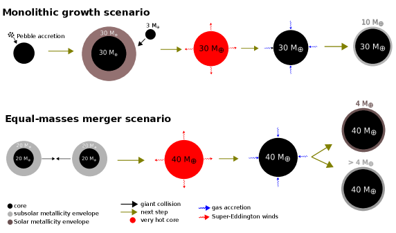
1 المقدمة
كشفت الدراسات الاستقصائية الأخيرة للكواكب الخارجية عن تنوع مذهل في أنظمة الكواكب التي تتحدى نماذج التكوين (Gaudi, Christiansen, & Meyer, 2020). في حين أن طريقة العبور الناجحة للغاية حساسة للكواكب في فترات قصيرة (Deeg & Alonso, 2018)، فإن مسوحات العدسات الميكروية تستكشف الكواكب في مدارات أوسع بكثير (Batista, 2018; Guerrero et al., 2021). إحدى النتائج الأكثر إثارة للدهشة من مسوحات العدسات الميكروية هي الاستدلال الإحصائي لعدد كبير من الكواكب الباردة التي تقل كتلتها عن زحل عند أنصاف أقطار مدارية قليلة (نشير إليها باسم CSS لبقية هذه المخطوطة). على الرغم من الاعتماد على عدد قليل فقط من الاكتشافات، يشير تحليل حساسيات المسح إلى أن هذه الكواكب ذات نسبة كتلة النجم المضيف بين و (– بالنسبة لنجم كتلة الشمس)، شائعة (Suzuki et al., 2016; Jung et al., 2019). باستخدام عدد محدود من الاكتشافات، Suzuki et al. (2016) قيّد معدل الحدوث المصحح من التحيز لـ CSS إلى 0.1-0.5 لكل نجم. علاوة على ذلك، فقد وجدوا "كسرًا" في ميل التوزيع حول ، مما يشير إلى ندرة الكواكب ذات الكتلة المنخفضة. Jung et al. (2019) من ناحية أخرى، مع اكتشاف CSS جديد، وجد أن الكسر أكثر انحدارًا بشكل ملحوظ، وحوالي . علاوة على ذلك، فقد خلصوا إلى أن حساب التحيزات الرصدية لم يكن له سوى تأثير ضئيل على هذه النتائج. أخيرًا، باستخدام خوارزمية “Anomaly Finder” الآلية المطبقة على البيانات الأرشيفية، لم يجد Hwang et al. (2021) أي تغيير في الميل في التوزيع على الإطلاق. ومع ذلك، قد يتم تعديل إحصائيات توزيع الكتلة المرصودة بشكل كبير، لصالح الكواكب التي تقع تحت هذا النطاق الكتلي، من خلال عمليات البحث المنهجية المستمرة (Zang et al., 2021) والتي تكشف عن بعض التوقيعات المحيرة لعدد أكبر بكثير من الكواكب ذات كتلة نبتون التي لم يتم اكتشافها سابقًا (Hwang et al., 2021).
إذا تم تأكيد ذلك من خلال الملاحظات المستقبلية، بما في ذلك التصوير المباشر والسرعة الشعاعية ومسوحات WFIRST، فإن CSS ستتحدى نماذج التكوين الكلاسيكية التي تتنبأ بأن أسلافها كان يجب أن تنمو لتصبح كواكب ذات كتلة المشتري (Suzuki et al., 2018; Zang et al., 2020; Terry et al., 2021). Suzuki et al. (2018) أظهر على وجه الخصوص أن نماذج التركيب السكاني التفصيلية (Ida & Lin, 2004; Mordasini, Alibert, & Benz, 2009; Ida, Lin, & Nagasawa, 2013) تتنبأ بعدد أقل من كواكب CSS مما لوحظ في مسوحات العدسات الميكروية المبكرة. هذه "الصحراء" المتوقعة نظريًا للكواكب متوسطة الكتلة وطويلة الفترة (Ida & Lin, 2004) ناتجة بشكل أساسي عن المقاييس الزمنية لتراكم التبريد للأغلفة حول النوى التي 1) متناسبة عكسيًا مع كتلتها الإجمالية و 2) أقصر من 1-10 Myr (بمتوسط 3 Myr) مقياس بقاء الأقراص النجمية الأولية (Hillenbrand, 2005; Ribas, Bouy, & Merín, 2015; Andrews, 2020). وبالتالي يمكن أن تنكمش الأغلفة بسرعة، وتنمو بسرعة لتصبح قابلة للمقارنة مع النوى من حيث الكتلة، وتخضع لتراكم جامح، وتتحول إلى عمالقة غازية في هذه العملية. هذا الاتجاه حاد بشكل خاص بالنسبة لـ CSS عند المحور شبه الرئيسي المتوسط حيث لا تزال كثافة غاز القرص كبيرة نسبيًا ودرجة حرارته منخفضة. في النهاية، مع نمو كتلة الكوكب الغازي العملاق، يؤدي تفاعل المد والجزر مع القرص إلى تكوين فجوة (Goldreich & Tremaine, 1980; Lin & Papaloizou, 1986)، والتي يمكن أن تخمد إمدادات الغاز وتحد من كتلة الكوكب (Lin & Papaloizou, 1980, 1993; Bryden et al., 1999; Ida & Lin, 2004; Li et al., 2021)، على الرغم من عدم اليقين بشأن ما إذا كان هذا ممكنًا لا يزال (Morbidelli et al., 2014).
تم العثور على فجوات بشكل شائع في صور ALMA للكواكب الأولية أقراص (e.g. Andrews et al., 2018; Huang et al., 2018; Long et al., 2018, 2019; Lodato et al., 2019). لقد كان عرضها المرصود استُخدم لاستنتاج كتلة الكواكب واستخلاص توزيع الكتلة المستمر ل مجموعة غنية من الكواكب الافتراضية في نطاق عدة كتل من الأرض إلى المشتري (Lodato et al., 2019; Nayakshin, Dipierro, & Szulágyi, 2019). ومع ذلك، فإن الفجوة الفاصلة بين الكواكب ذات كتلة نبتون صغيرة يمكن مقارنة اللامركزيات المدارية بتلك التي تحدثها الكواكب ذات كتلة زحل والتي تدور في مدارات دائرية. هذا الانحطاط قد يطمس التناقض بين توزيع الكتلة النظري ثنائي الوسائط وتوزيع عرض الفجوة المرصود والمستمر (Chen et al., 2021).
يمكن أيضًا حل التناقض بين الانخفاض المتوقع في توزيع الكتلة والاستدلال الرصدي لدالة الكتلة المستمرة إذا استُنفد القرص في الوقت المناسب وبسرعة أثناء ظهور CSS وعمالقة الغاز، أو إذا تم قمع معدل التبريد والتراكم خلال بعض مراحل النمو الحرجة. في محاولة لاستكشاف هذه السيناريوهات المحتملة لأصل CSS في سياق نموذج تكوين الكوكب ذو التراكم الأساسي، نبحث هنا في نتائج الاصطدامات العملاقة التي تحدث أثناء مرحلة التشتت النشطة ديناميكيًا للقرص. نتناول ثلاثة تأثيرات فيزيائية ناجمة عن الاصطدامات العملاقة: 1) الكمية الهائلة من الطاقة التبديد، الذي يساهم في فقدان الغلاف الغازي للكوكب الأولي، ونمو كتلة النواة من خلال عمليات الاندماج، 2) التلوث بالعناصر الثقيلة وتعزيز العتامة في المناطق المحيطة المباشرة مما يقلل من معدل التبريد، ويعزز انتقال مرحلة البخار إلى المكثفات، ويقلل من معدل الانكماش شبه الهيدروستاتيكي في الغلاف المعاد الحصول عليه، و 3) الاستنفاد السريع للغاز المحيط في القرص الأم.
باستخدام نموذج مبسط لتطور غلاف ما بعد الاصطدام، نبدأ في §2 من خلال إظهار أن الاصطدامات العملاقة يمكنها بكفاءة "إعادة ضبط" الغلاف تحت الحرج إلى حالة ما قبل التراكم عن طريق تجريده حراريًا بالكامل تقريبًا. ومع انخفاض كتلتها الإجمالية بعد الاصطدام، تحتاج هذه النوى المتبقية إلى تجديد كمية كبيرة من الغاز في غلافها للوصول إلى كتلة CSS ولكن لا تتجاوزها. في §3 نقدم شبكة من نماذج تراكم تبريد الغلاف 1D لنطاقات مختلفة من أ) كثافة القرص، ب) مقياس زمن استنفاد القرص، ج) مع أو بدون اجتراف الإنتروبيا إلى جوار النوى، د) العتامة، وه) مسار أديباتي جاف أو رطب للمناطق الخارجية والمتوسطة الباردة المخصبة بالعناصر الثقيلة في الغلاف الكوكبي. يوفر هذا البحث بعض القيود على مقادير المعلمات الفيزيائية المناسبة لتكوين CSS من خلال الاصطدامات العملاقة خلال المراحل المتقدمة من تطور القرص.
نفسر هذه النتائج ونقترح سيناريو معقول لتكوين الكواكب متوسطة الكتلة في §4. الصورة الأساسية هي أن الاصطدامات العملاقة تجرد النوى الضخمة من أغلفتها مع استنفاد القرص الكوكبي الأولي، وفي ظل الظروف المناسبة، يمكنها إعادة تراكم غلاف منخفض الكتلة يترك الكوكب بكتلة في نطاق ما شبه زحل. يقدم الشكل 1 رسمًا توضيحيًا تخطيطيًا لحالتين محددتين لنواة كبيرة مع تصادم صغير أو نواتين متساويتين في الكتلة. في §4، نناقش أيضًا تكوين عمالقة الجليد، بما في ذلك أورانوس ونبتون، والتي تحتوي على أغلفة ذات كتل مماثلة لكتلة الأرض ونوى أكبر بعشر مرات. نلخص نتائجنا ونناقش آثارها في §5.
2 تأثير الاصطدامات العملاقة على غلاف الكواكب الأولية
يُعتقد أن الاصطدامات العملاقة تلعب دورًا أساسيًا في تكوين وتطور النظام الشمسي وأنظمة الكواكب الخارجية. لقد تم استحضارها منذ فترة طويلة كآلية لتنمية نوى الكواكب، وتجريد أغلفتها، وتغيير دورانها، والتأثير على ديناميكياتها (Lin & Ida, 1997; Li et al., 2010; Liu et al., 2015c; Ogihara et al., 2021). في السياق الحالي، تؤدي هذه الاصطدامات إلى نتيجتين إضافيتين: 1) يمكنها إعادة ضبط الغلاف الكوكبي الأولي على الإنتروبيا الحالة المقابلة لعصر سابق بكثير (انظر أدناه)، و2) يمكن أن تزيد بشكل كبير من معدنية الغلاف. هذه الاصطدامات من المرجح أن تحدث خلال المراحل المتقدمة من تطور القرص، وخاصة خلال مرحلة القرص الانتقالية، عندما يكون الغاز الكثافة منخفضة ويتم تقليل المقياس الزمني لتشتت القرص إلى سنة (Zhou, Lin, & Sun, 2007; Ida, Lin, & Nagasawa, 2013; Ginzburg & Chiang, 2020).
في هذا القسم، نطرح نموذجًا مبسطًا لتطور ما بعد الاصطدام للكوكب الأولي وغلافه. أولاً، نناقش احتمالية حدوث هذه الاصطدامات العملاقة في عدد قليل من الوحدات الفلكية. في سيناريوهات تراكم النواة التقليدية، تخضع الكواكب المصغرة لنمو القلة لتصبح أجنة الكواكب الأولية(Kokubo & Ida, 1998; Ida & Lin, 2004). التفاعل المتبادل بين هذه الأجنة يثير انحرافها (Chambers, Wetherill, & Boss, 1996). عندما تصبح سرعة تشتت الأجنة قابلة للمقارنة مع سرعة الهروب من السطح، ينخفض المقطع العرضي الاصطدامي إلى حجمها الفيزيائي (Safranov, 1969). بالنسبة لنموذج السديم ذي الكتلة الأدنى، تتصادم الأجنة ذات كتلة الأرض ويندمجون مع بعضهم البعض على نطاق زمني عدة عشرات من Myr في نطاق الكواكب الأرضية (Chambers & Wetherill, 1998). تتطابق هذه النتائج بشكل جيد مع عمليات محاكاة الجسم N على النمو النهائي للأجنة ذات الكتلة المتواضعة (Kokubo, Kominami, & Ida, 2006). وتكون قيمة أكبر حتى فيما وراء خط الثلج (Goldreich et al., 2004)، مما يشكل انقسامًا محتملاً بين احتمالية تكوين الكواكب الغازية في السديم الشمسي ذي الكتلة الدنيا قبل نضوبه (Pollack et al., 1996) ومعدل حدوثها الملاحظ حول نجوم النوع الشمسي (Kunimoto & Matthews, 2020).
ومع ذلك، فإن هذه التقديرات وعمليات المحاكاة المبكرة ذات صلة في الغالب بالتفاعل المحلي بين الكواكب المصغرة وكوكب الأرض الأجنة في السديم الشمسي ذو الكتلة الدنيا. هناك العديد من الجوانب التي قد تقلل بشكل ملحوظ من عبور المدارين () والتصادم () المقاييس الزمنية. من خلال الحساب التحليلي ومحاكاة N-body واسعة النطاق، حدد Zhou, Lin, & Sun (2007) للأنظمة التي تحتوي على أجنة متعددة متساوية الكتلة. ويبينون أن دالة متزايدة بسرعة للتباعد المعياري بين الأجنة (بوحدات نصف قطر هيل)، وتتناقص مع لامركزيتها المدارية. على سبيل المثال، في أقراص الكواكب الأولية المكتظة بكثافة والتي تحتوي على عدة 15 M⊕ أجنة مفصولة بـ 1 AU بدءًا من 5 AU، مع لامركزية مدارية قدره 0.3، نقدر أن يمكن مقارنته بعمر القرص الانتقالي سنة. [تؤدي التأثيرات المشابهة أيضًا إلى الديناميكية استرخاء وهجرة الكواكب الغازية العملاقة Rasio & Ford (1996); Weidenschilling & Marzari (1996); Lin & Ida (1997); Zhou, Lin, & Sun (2007); Jurć & Tremaine (2008).] علاوة على ذلك، فإن ، أي الكثافة السطحية لكتلة الأجنة (Nagasawa, Lin, & Thommes, 2005) وحجم يمكن أن يكون أكبر بكثير من ذلك الحد الأدنى من كتلة السديم الشمسي إما عالميًا في أقراص غنية بكتل البناء أو بالقرب من مصائد الهجرة حيث الأجنة تتلاقى (Liu et al., 2015a). يتم أيضًا توسيع المقطع العرضي للاصطدامات المتماسكة من تلك الموجودة في النوى العارية للأجسام المحاطة بأغلفة منكمشة. وقد تم تطبيق وصفات هذه التأثيرات على السكان نماذج تركيب سكاني لإعادة إنتاج الكتلة المرصودة والتوزيع المكاني للكواكب الخارجية، بما في ذلك الكواكب الغازية العملاقة (Ida & Lin, 2010; Ida, Lin, & Nagasawa, 2013). خلال المرحلة الأخيرة من تكوينها، تزعزع اضطرابات الكواكب الغازية العملاقة المتزايدة بسرعة استقرار مدارات الأجنة القريبة، وتعزز تواتر اصطدامها واحتماله (Zhou & Lin, 2007). في الأقراص الانتقالية، يؤدي انتشار الرنين طويل الأمد لعمالقة الغاز (بسبب اضطرابها البعيد لا اللقاءات القريبة) إلى اصطفاف خطوط طول الحضيض للأجنة المتبقية، وخفض سرعتها النسبية، وزيادة تواتر اصطدامها بمقدار رتبة قدرية (Nagasawa, Lin, & Thommes, 2005; Thommes, Nagasawa, & Lin, 2008; Petrovich, Wu, & Ali-Dib, 2019; Ali-Dib & Petrovich, 2020). وبناءً على هذه الاعتبارات، نعتمد فرضية أن الاصطدامات العملاقة بين أجنة الكواكب الأولية ليست مسارًا فعالًا لنشوء عمالقة الغاز فحسب، بل ترتبط أيضًا بوجودها.
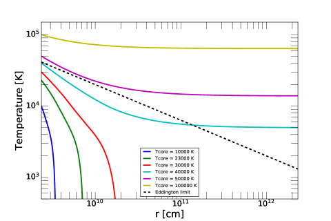
2.1 فقدان الغلاف أثناء الاصطدامات العملاقة ودرجة حرارة النواة بعد الاصطدام
تظهر عمليات المحاكاة متعددة المكونات أن الاصطدامات العملاقة تؤدي إلى خسارة كبيرة في كتلة الغلاف الجوي، وتبديد مكثف للطاقة الحركية إلى حرارة، وتوسيع الغلاف المتبقي (Genda & Abe, 2003; Liu et al., 2015b). بعد الاصطدام، يفقد الغلاف كمية كبيرة من الغاز، ثم يتكيف من جديد مع سلسلة جديدة من التوازن شبه الهيدروستاتيكي عندما يبرد، وينكمش، ويستأنف تراكم غاز القرص.
نظرًا لأن المقطع العرضي الاصطدامي هو دالة لنصف قطر هيل ، يكون احتمال الاصطدام هو الأعلى بالنسبة للكواكب الأولية الضخمة عند المحور شبه الرئيسي الكبير. لذلك، بالنسبة لنموذجنا المرجعي، فإننا نعتبر كوكبًا قبل الوصول إلى التراكم الجامح، مع غلاف متساوٍ تقريبًا وكتلتين متقاربتين للنواة والغلاف ، وكتلة إجمالية م⊕. تعد قيمة اختيارًا متحفظًا لكتلة النواة لتقدير فقدان الكتلة، نظرًا لأن القيم المنخفضة قد تؤدي إلى نواة أكثر سخونة بعد الاصطدام وبالتالي خسارة أكبر في كتلة الغلاف.
Schlichting, Sari, & Yalinewich (2015) قام بالتحقيق في مقدار فقدان كتلة الغلاف الجوي بعد اصطدام عملاق ناتج عن موجة الصدمة التي أطلقت في الغلاف الجوي بواسطة الحركة الأرضية العالمية. لقد وجدوا أن جزء فقدان الكتلة العالمي للغلاف الجوي الأديباتي يُعطى بواسطة
| (1) | |||||
حيث و هي كتلة المرتطم وسرعته، هي الكتلة الإجمالية للكوكب (النواة + الغلاف)، و سرعة الهروب للكوكب. توجد أوصاف مماثلة للأجواء متساوية الحرارة. بافتراض و / = 1، المعادلة (1) تعطي 0.06. لذلك، حتى في حالة الاصطدام النشط للغاية، فإن نسبة فقدان الكتلة بسبب موجة الصدمة لا تزال متواضعة. تتوافق هذه القيم مع نتائج Inamdar & Schlichting (2015) عند النظر في نفس كتلة الغلاف وسرعة الاصطدام.
ومع ذلك، نظرًا لأن محاكاة Schlichting, Sari, & Yalinewich (2015) وInamdar & Schlichting (2015) هي هيدروديناميكية بطبيعتها، فإنها تركز على فيزياء انتشار الصدمات ولا تأخذ في الاعتبار التفاعلات الحرارية بين النواة والغلاف المتبقي أثناء تطور ما بعد الاصطدام. ومن ثم نقدم وصفة مبسطة لحساب هذه الآثار. نؤكد أن تحليلنا اللاحق يختلف اختلافًا جوهريًا عن التحليل الذي قدمه Liu et al. (2015b)، الذي أخذ في الاعتبار التفاعل الحراري بعد الاصطدام بين الغلاف ورياح باركر التي تحركها النجوم. من ناحية أخرى، في هذه الورقة، بينما نتجاهل هذه التأثيرات لأنها لا تذكر عند 5 AU (تحليل Liu et al. (2015b) كان لـ 0.1 AU)، فإننا ندرج تأثيرات الإشعاع الحراري للنواة نفسها التي تم تسخينها بشكل كبير بسبب الاصطدام.
بافتراض أن الاصطدام غير مرن، وأن الطاقة المتبقية تترسب بالكامل في النواة الصلبة (Liu et al., 2015b)، يمكننا تقدير الحالة النشطة للنواة بعد الاصطدام عن طريق طرح طاقة ربط الجاذبية للجزء المفقود من الغلاف () من الطاقة الحركية للمرتطم (). بافتراض أن (كما هو موضح في القسمين 2.4 و2.4.3 هي الحالة بالنسبة لمعلماتنا)، فإننا نقدر بعد ذلك درجة حرارة النواة بعد الاصطدام لتكون:
| (2) |
حيث هي درجة حرارة النواة قبل الاصطدام. هذه هي درجة الحرارة عند الحدود بين النواة وقاعدة الغلاف الكوكبي. نأخذ السعة الحرارية لتكون من Boujibar, Driscoll, & Fei (2020) للسيليكات. نفترض كثافة النواة 3.3 .
مع نفس معلمات التأثير المستخدمة أعلاه (، و/ = 1) وأخذ K (يساوي درجة حرارة قاعدة الغلاف قبل الاصطدام)، نجد أن درجة حرارة النواة بعد الاصطدام هي T K. وبالتالي يُقدر لمعان النواة بعد الاصطدام بـ erg s-1، حيث يتم حساب نصف قطر النواة من كثافتها وكتلتها. كثافة النواة 3 أضعاف القيمة المفترضة هنا ستؤدي إلى فقط عامل 2 أصغر.
2.2 الهيكل الحراري للغلاف بعد الاصطدام
نقوم بتحليل تطور ما بعد الاصطدام على افتراض أن منتجات الاندماج تحتفظ بالكامل بنواتها وتفقد معظم محتوى الغاز قبل الاصطدام. على مقياس زمني ديناميكي قصير، يتم الاحتفاظ بغلاف منخفض الكتلة من خلال بنية حرارية هيدروستاتيكية وشبه متوازنة. بعد ذلك، تتطور توزيعات الكثافة ودرجة الحرارة في الغلاف مع فقدان الإنتروبيا بالقرب من حدودها الخارجية على مقياس زمني أطول لانتقال الحرارة.
بالنسبة لدرجة الحرارة الأساسية العالية واللمعان الذي وجدناه في §2.1، يختلف هيكل الغلاف بشكل أساسي عن هيكل الكوكب الأولي الكلاسيكي المدمج. في هذه الحالة، يصبح الغلاف حمليًا بالكامل بعد حدوث شبه توازن حراري بحيث يكون اللمعان في جميع أنحاء الغلاف مساويًا تقريبًا لللمعان الصادر من النواة. نظرًا لأن درجة حرارة النواة ومحتوى الطاقة أعلى بكثير من تلك الموجودة في القرص المحلي، فإن الغلاف بأكمله يصل إلى نفس درجة الحرارة مثل تلك الموجودة في النواة. يتناقض هذا الهيكل الحراري مع الأغلفة الأديباتية الكلاسيكية حول أسلافها الأكثر برودة والتي تتطابق مع المسار الأديباتي لغاز القرص البارد. يتم التحكم بشكل كامل في توزيع الكثافة، وبالتالي الكتلة، للغلاف الأديباتي بواسطة الحالة الحدودية والمؤشر الأديباتي. بعد الاصطدام، يؤدي الارتفاع الكبير في الإنتروبيا إلى تقليل الكثافة والكتلة في جميع أنحاء الغلاف. وبالتالي، فإن الغلاف المحيط بالنواة يتوسع إلى ما وراء نصف قطر هيل ويتخلص من أي كتلة تزيد عن تلك التي يسمح بها الحل الأديباتي. وبالتالي فإن نتيجة الاصطدام هي غلاف شديد الحرارة وكتلته أقل بكثير. بعد ذلك، يجب أن تفقد النواة والغلاف الإنتروبيا وأن يبرد بدرجة كافية للسماح بإعادة إنشاء منطقة إشعاعية خارجية قبل أن يتمكن منتج الاندماج من استئناف تراكم غاز القرص.
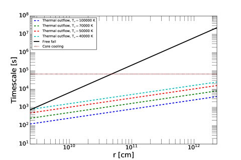
تم وصف التركيب الحراري للغلاف الأديباتي في التوازن الهيدروستاتيكي بواسطة
| (3) |
حيث هو التدرج الأديباتي، وبما أننا نتوقع أن تكون كتلة الغلاف الساخن أصغر بكثير من كتلة النواة، فإننا نهمل مساهمة الغلاف في الجاذبية باستخدام بدلاً من . بأخذ معادلة غاز مثالي للحالة مع متوسط الوزن الجزيئي ، نجد بعد ذلك
| (4) |
وله الحل التحليلي
| (5) |
تم رسم هذا الحل لدرجات حرارة أساسية مختلفة في الشكل 2.
تُظهر ملفات تعريف درجة الحرارة في الشكل 2 سلوكين مختلفين. ل
| (7) | |||||
تظل درجة الحرارة أكبر بكثير من درجة حرارة القرص عند أنصاف أقطار كبيرة. تمثل مرحلة الحرارة المرتفعة هذه حالة عابرة، حيث أن هذه الأغلفة غير مستقرة ديناميكيًا وتبرد عن طريق طرح الغاز الساخن مرة أخرى إلى القرص عبر رياح فوق إدنغتونية (كما تمت مناقشته في القسم التالي).
بمجرد أن تبرد النواة إلى ما دون قيمة العتبة في المعادلة (7)، تنخفض درجة حرارة الغلاف في حلولنا الأديباتية بشكل حاد مع نصف القطر. الغلاف الجوي في هذه الحالة له سمك محدود (على سبيل المثال 5 يوضح أن ينعدم عند نصف قطر محدود). هذه النتيجة هي نتيجة لافتراضنا أن التدرج في درجة الحرارة أديباتي. في الواقع، في حدود درجة الحرارة المنخفضة هذه، ستتطور منطقة إشعاعية في الغلاف الخارجي وتنظم التفاعلات الحرارية بين الغلاف والقرص.
2.3 رياح فوق إدنغتونية
يمكن أن يؤدي هيكل الغلاف الساخن الموصوف أعلاه مع نواة عالية اللمعان والضغط الإشعاعي الكبير إلى رياح فوق إدنغتونية. لمعان إدنغتون هو
| (8) |
حيث هو المقطع العرضي لتشتت طومسون (مناسب لدرجات الحرارة الأعلى من درجة حرارة تكاثف الحبيبات). درجة الحرارة التي يتجاوز فيها لمعان النواة حد إدنغتون
يمكن بعد ذلك مقارنة درجة الحرارة هذه بالمظهر الحراري المحسوب أعلاه، كما هو موضح في الشكل 2. في المراحل المبكرة، عندما ، يكون الغلاف الخارجي ساخنًا بدرجة كافية ليتغلب ضغط الإشعاع على الجاذبية، مما يدفع الغاز الساخن إلى الخارج من نصف قطر هيل، وربما فتح فجوة بداخله. يتسارع غاز الغلاف إلى سرعة التمدد المدفوعة بالضغط الإشعاعي محسوبة، عند إهمال ضغط الغاز، كما
| (10) |
حيث في هذه الحالة هي عتامة تبعثر طومسون، ولمعان الغلاف . لقد حللنا هذه المعادلة عدديًا في الشكل 3، وأظهرنا أن السرعات المتوقعة أكبر بكثير من سرعة الهروب من النواة المتبقية .
يوضح الشكل 3 علاوة على ذلك أن القصور الذاتي للغلاف المتسرب يمكّنه من الوصول إلى نصف قطر هيل المتبقي من النواة (مع عامل التمدد حيث هي الكثافة الداخلية للنجم) على مقياس زمني s لـ في المدى – K. يعد هذا المقياس الزمني للتدفق الخارجي المعتمد على الضغط الإشعاعي أقصر بكثير من المقياس الزمني للسقوط الحر الديناميكي في نصف قطر هيل s، وتبريد الكوكب مقياس زمني (لكل من نواته وغلافه) والذي يكون في البداية s حيث هي الطاقة الحرارية للنواة. في الملحق A، نناقش مرحلة "إدنغتون الهامشية" الوسيطة قصيرة العمر والتي يؤدي خلالها الضغط الإشعاعي للنواة إلى تقليص نصف قطر هيل، مما يؤدي إلى نطاق زمني أقصر للتدفق الخارجي مما هو مقدر أعلاه. تشير هذه المقارنة إلى أن غلاف الكوكب قبل الاصطدام يتم قذفه قبل أن يبرد غلافه بعد الاصطدام بشكل كبير مع انخفاض درجات الحرارة. عندما تنخفض درجة حرارة النواة إلى أقل من قيمة العتبة التي تمت مناقشتها في القسم السابق، فإن ضغط الإشعاع في جميع أنحاء الغلاف بأكمله يقع تحت حد إدنغتون. تتوافق هذه الحالة الانتقالية مع لمعان erg/s حيث تتطور منطقة إشعاعية في الغلاف.
| Model parameters | [erg] | [erg] | || | [] | [] | ||
|---|---|---|---|---|---|---|---|
| =30 , =1.40 | -3.04 | 2.12 | 9.14 | -7.74 | -8.3 | 1.50 | 1.50 |
| =30 , =1.25 | -4.94 | 4.72 | 2.22 | -5.76 | -8.3 | 0.43 | 0.55 |
| =20 , =1.40 | -1.71 | 1.18 | 5.31 | -5.01 | -4.22 | 1.15 | 1.15 |
| =20 , =1.25 | -2.68 | 2.51 | 1.78 | -4.10 | -4.22 | 0.38 | 0.53 |
2.4 الحد الأدنى لكتلة المرتطم
2.4.1 الحالة 1: القيود الهيدروديناميكية
يجب أن يكون هناك حد أدنى من كتلة الارتطام المطلوبة لإعادة ضبط الغلاف حرارياً. أحد الاعتبارات لحساباتنا هو أنه بالنسبة للمعادلة (1) لجزء فقدان كتلة الغلاف من Schlichting, Sari, & Yalinewich (2015) ليتم تطبيقه، يجب أن يكون نصف قطر المصادم أكبر من ارتفاع مقياس الغلاف عند الواجهة الأساسية، بحيث يجب أن تكون كتلته أكبر من كتلة الهواء التي واجهها قبل الوصول إلى النواة. للحصول على تكوين ما قبل الاصطدام يمكن تحقيقه - أي سلف مدمج في قرص نجمي أولي نموذجي بكتلة هامشية وبنية لتجنب تراكم الغاز الجامح أكثر من – Myr، نعتبر نموذجًا للنواة 30 M⊕ مع غلاف تحت الحرج قليلاً \colorblack (مع كتلة ). في هذه الحالة، يكون ارتفاع المقياس عند المستوى الأساسي سم. ل نواة جليدية صخرية يبلغ حجمها جم/سم3، وجسم ارتطام \colorblack نصف قطره له كتلة 0.55 M⊕.
أحد الاعتبارات ذات الصلة الوثيقة هو تأثير السحب الديناميكي الهوائي على جهاز الاصطدام. يمكننا تعريف قوة السحب في حد عدد رينولدز الكبير على النحو التالي:
| (11) |
بافتراض نفس سيناريو المرتطم 0.55 M⊕ مع vimp = vesc، ولـ على المستوى الأساسي، نجد أن 0.034، حيث هي قوة الجاذبية للكوكب الأولي. يمكننا بالتالي أن نتجاهل تأثيرات السحب بشكل آمن بالنسبة للمصطدم الذي يلبي الشرط 1.
2.4.2 الحالة 2: القيود الحرارية
الشرط الثاني اللازم لإعادة ضبط الغلاف هو بداية رياح فوق إدنغتونية التي تمت مناقشتها أعلاه. لكي تعمل هذه الآلية، يجب أن تكون الطاقة المتبقية للمرتطم المتبددة في نواة الجسم كبيرة بما يكفي لرفع درجة حرارته إلى (ما يعادل 2.3). من المعادلة (2) أعلاه، وبافتراض مرة أخرى vimp = vesc، يمكننا أن نكتب
| (12) |
هذا هو 0.5 لـ 30 م⊕ وهو مشابه للحالة 1.
ويمكن توسيع هذا الشرط أكثر باشتراط أنه، كما نوقش في القسم 2.3، يكون مقياس زمن الجريان الحراري الخارج عند نصف قطر هيل أصغر من مقياس زمن تبريد النواة . ويُلخص ذلك على أنه . ومن ثم نكتب
| (13) |
وبإضافة vimp = vesc، نحصل أخيرًا على
| (14) |
بالنسبة لـ K (الذي يكون المقياس الزمني للتدفق الحراري فيه أطول)، و 30 M⊕، نحصل على 0.12 M⊕.
2.4.3 الحالة 3: قيود الطاقة
إن الشرط الأكثر صرامة عادة لإعادة ضبط الغلاف من خلال اصطدام عملاق هو أن طاقة المرتطم المترسبة في النواة يجب أن تكون أكبر من طاقة الربط للغلاف المتبقي بأكمله. وبشكل أكثر عمومية، يمكن ذكر هذا الشرط من خلال اشتراط أن تكون الطاقة الحركية للصدمة أكبر من الطاقة الإجمالية للغلاف قبل الاصطدام. إذا لم يتم استيفاء هذا الشرط، فسوف ينخفض لمعان النواة ببساطة إلى ما دون حد إدينغتون بعد التخلص من جزء صغير من الغلاف المتبقي.
ومن ثم نطلب أن حيث و هي طاقات الجاذبية والطاقات الداخلية المحددة في المعادلتين (26) و (27). نبدأ بحساب هذه المصطلحات عددياً باستخدام النموذج المقدم في §3.1 لبعض الحالات التمثيلية، قبل تقديم وصفة تحليلية بسيطة. جميع الموديلات المعروضة موجودة عند 5 AU مع عتامة حبيبية ISM، مع . لاحظ أنه بشكل عام، بما أن و لهما إشارات متضادة، فإن حجم الطاقة الإجمالية يمكن أن يكون أصغر بكثير من مقادير أو وحده. نناقش هذا الأمر بشكل أكبر من خلال عدسة مبرهنة فيريال في الملحق C.
نتائج حساب طاقة الربط مبينة في الجدول 1. بالنسبة لحالتنا الاسمية (30 النواة، ، وvimp = vesc)، فإن الحد الأدنى لكتلة المرتطم هو 1.5 . يتناقص بشكل طفيف إلى 1.15 للنواة 20 النواة. في كلتا الحالتين، تكون هذه الكتلة أعلى من تلك الموجودة في الظروف 1 و2، وبالتالي فهي الحد الأدنى من كتل الارتطام اللازمة لإعادة ضبط غلاف ما قبل الهروب المقابل بالكامل. بالنسبة لـ ، تكون الكتل أقل مع 0.43 و0.38 لـ 30 و20 النوى على التوالي. في هذه الحالات، يكون الشرط 1 أكثر صرامة، على الرغم من أن الكتل الموجودة للشرط 1 قريبة أيضًا (لكنها أعلى من) تلك اللازمة لتحقيق الشرطين 2 و3.
نلاحظ أنه في صياغة الحالة 2 أعلاه (وفي الأقسام السابقة)، عند حساب درجة حرارة النواة بعد الاصطدام، افترضنا أن طاقة ربط الجاذبية للجزء المفقود هيدروديناميكيًا من الغلاف (مرحلة ما قبل رياح إدنغتون) لا تذكر مقارنة بالطاقة الحركية للصدمة. يتم تحقيق هذا التقريب تلقائيًا عند استيفاء الشرط 3.
نقوم الآن بصياغة وصفة تحليلية بسيطة لحساب الحد الأدنى من كتلة المرتطم المطلوبة، كما هو موضح في الشرط 3 أعلاه. نبدأ بتحديد و (المقيم في الجدول 1) ليكون
| (15) |
و
| (16) |
حيث يكون كلاهما تقريبيًا لطاقة ربط الجاذبية للغلاف، لكنهما قابلان للتطبيق في ظل ظروف مختلفة. بالنسبة لمؤشر أديباتي 4/3، تتركز كتلة الغلاف بالقرب من حدود الحمل الإشعاعي (RCB)، وبالتالي نستخدم نصف قطر حدود الحمل الإشعاعي في المقام. بالنسبة إلى 4/3، الغلاف يتركز بالقرب من النواة، وبالتالي يكون المقام (Lee & Chiang, 2015). نحدد أيضًا الطاقة الداخلية التقريبية للغلاف
| (17) |
حيث هي أيضًا درجة حرارة RCB، أو قاعدة الغلاف، اعتمادًا على . معادلة الطاقة الحركية للجسم المصطدم مع الطاقة الكلية للغلاف (| + | )، بالنسبة إلى vimp = vesc نحصل على الحد الأدنى لكتلة الجسم المرتطم كما يلي:
| (18) |
حيث إما أو ، اعتمادًا على .
ومع ذلك، يمكن أن تختلف هذه المعادلة عن الحل العددي بعامل – حسب المعلمات، حتى لو تم استخدام أو الصحيح. هذا ببساطة لأنه، كما يتبين في الجدول 1، تختلف مصطلحات الطاقة المحسوبة تحليليًا للغلاف عن القيم العددية بعوامل –. هذا ليس مفاجئًا نظرًا لأن المعادلتين (15) و(16) تفتقدان العوامل المسبقة لوحدة الترتيب التي تعتمد على توزيع كثافة الغلاف. ومع ذلك، فهو مفيد كنقطة انطلاق لتقدير ترتيب الحجم الأدنى لكتلة المرتطم، ويمكن معايرته باستخدام عوامل التصحيح لتتناسب مع عمليات المحاكاة العددية.
3 تبريد الغلاف وإعادة تجميعه بعد الاصطدام
بمجرد أن تبرد النواة إلى ما دون الإنتروبيا المحلية للقرص، يمكن أن تتطور منطقة إشعاعية جوية، مما يسمح للغلاف بالتبريد إشعاعيًا والانكماش. ومع ذلك، كان من الممكن أن يكون الاصطدام العملاق قد أدى إلى إيداع كمية كبيرة من المواد الصلبة في الغلاف، مما أدى إلى غلاف معدني أعلى من نظيره قبل الاصطدام. في المناطق الداخلية من الغلاف، تكون درجة الحرارة كبيرة بما يكفي لتبخير جسيمات السيليكات، مما قد يمنع إعادة تراكم هذه الجسيمات على النواة وزيادة عتامة الطور الغازي المحلي. على الرغم من أن جزءًا كبيرًا من حطام العناصر الثقيلة قد يُفقد مع رياح فوق إدنغتونية التي هربت في البداية إلى منطقة القرص خارج نصف قطر هيل للنواة، فإننا نفترض أنها تظل قريبة وتلوث غاز القرص المحيط. يوفر هذا الخزان الغني بالمعادن إمدادات الغاز لإعادة تراكمه لاحقًا.
في هذا القسم، نستخدم نموذج تراكم التبريد الجوي 1D لحساب مدى قدرة الغلاف على إعادة التراكم بعد الاصطدام العملاق، وبالتالي تقييد الظروف التي بموجبها نحصل على كوكب عملاق متوسط الكتلة (). نعرض أولا تفاصيل النموذج (§3.1)، ومن ثم نناقش كيفية معالجة تأثيرات العناصر الثقيلة (§3.2)، وخاصة من خلال حساب الأديبات الرطب الذي يتضمن تأثيرات تكثيف السيليكات. في §3.3، نفحص تأثيرات معلمات النموذج المختلفة من خلال البحث الشبكي، لفهم نطاق النتائج المحتملة لتطور ما بعد الاصطدام.
3.1 نموذج عددي للتبريد والتراكم
النموذج مشابه للنموذج الذي تم استكشافه في Ali-Dib, Cumming, & Lin (2020). لقد قمنا بحل معادلات البنية الداخلية الكلاسيكية لغلاف ذو لمعان ثابت،
| (19) | ||||
حيث هي كتلة الغلاف الموجودة داخل نصف القطر و و و هي الضغط ودرجة الحرارة والكثافة على التوالي، و هو المتوسط الجزيئي الوزن (يعكس محتوى السيليكات في الغلاف الجوي). نحن ندرج النقل الحراري عن طريق الانتشار الإشعاعي والحمل الحراري عن طريق اختيار التدرج في درجة الحرارة
| (20) |
حيث هو التدرج الأديباتي، و هو التدرج الإشعاعي
| (21) |
مع العتامة الجوية والضياء . نناقش حساباتنا للتدرج المسار الأديباتي وتوزيع السيليكات في الغلاف الجوي في §3.2.
نأخذ في الاعتبار المساهمات في العتامة من الغازات والحبوب وH-، كتابة . نحن نستخدم وصفة عتامة بديلة من ورقتنا السابقة (Ali-Dib, Cumming, & Lin, 2020)، حيث استخدمنا Bell & Lin (1994)، للسماح لنا بتضمين معادن الغاز والحبوب بشكل صريح. ومع القيمة الشمسية للمعدنية ، نجد توافقًا جيدًا مع Bell & Lin (1994) بالنسبة لمدى واسع من درجات الحرارة والكثافة.
يتم حساب عتامة الغاز باستخدام المعادلات (3)–(5) من Freedman et al. (2014). هذا تتضمن الوصفة الطبية اعتماداً صريحًا على فلزية الغاز، وبالتالي فهي مناسبة للأجواء الغنية بالمعادن. نؤكد على أن المعدن هنا هو المعدن الطبيعي الطور الغازي الذي يُفترض أنه شمسي (المقابلة للمعلمة في Freedman et al. 2014) لحالة الأديبات الجافة (موضح أدناه)، ويتم حسابه باستمرار من كثافة تشبع بخار السيليكات لحالة المسار الأديباتي الرطب. نظرًا لأنه تم حساب عتامة الغاز Freedman et al. (2014) لدرجات حرارة تصل إلى 4000 كلفن، فإننا نقوم بالاستقراء بعد هذه النقطة. عتامة H- مأخوذة من Ferguson et al. (2005) و Lee & Chiang (2015)،
| (22) | ||||
عتامة الحبيبات مشتقة من Ali-Dib & Thompson (2020)، وتُعتبر بحد أدنى ضعف العتامة الهندسية ويعني روسيلاند عتامة الحبيبات الصغيرة. نحن نحدد
| (23) |
حيث للحبيبات الكروية نصف القطر (المفترض 2.310-4 سم، القيمة المختارة لحالة عتامة ISM الخاصة بنا لتكون قريبة جدًا من الحالة المكافئة باستخدام Bell & Lin 1994 و Ferguson et al. 2005)، كثافة المادة (المفترضة 3.2 جم/سم3)، والكسر الشامل ، و
| (24) |
حيث ذروة الطول الموجي في دالة بلانك هي . مع اختيارنا و، تكون العتامة الهندسية . نحن نتعامل مع الجزء الكتلي للحبيبات كمعامل حر، ونعتبره مستقلاً عن الحالة الرطبة/الجافة للغلاف حتى نتمكن من فهم تأثيرات عتامة الحبيبات بشكل منفصل. نقوم بإيقاف عتامة الحبيبات عند درجات حرارة عالية لحساب تسامي السيليكات. لتحقيق انتقال سلس بين الحبيبات وعتامة H-، نأخذ درجة حرارة تسامي الغبار لتكون 2500K (على الرغم من أنها أكبر من المفترض عادةً، إلا أن نتائجنا ليست حساسة لدرجة حرارة تسامي الغبار نظرًا لأن الغلاف عادة ما يكون أديباتي في هذه المرحلة).
لحساب التطور الزمني للغلاف، نتبع وصفة Piso & Youdin (2014) كما هو موضح في Ali-Dib, Cumming, & Lin (2020). نقوم ببناء سلسلة من نماذج الأغلفة ذات الكتلة المتزايدة من خلال دمج المعادلات (19)–(21) إلى الداخل من القرص (عند ) إلى سطح النواة. نقوم بتضمين نموذج مبسط لإعادة تدوير مادة القرص في كرة التل (Ormel, Shi, & Kuiper, 2015) كما هو موضح في Ali-Dib, Cumming, & Lin (2020). نحن نفترض أن المنطقة التي يخترقها تدفق إعادة التدوير تتبع نفس الأديبات مثل القرص (نظرًا لأن التدفق يتجه بسرعة إلى غاز القرص إلى الداخل). نعرض النماذج أدناه مع () وبدون () إعادة التدوير المتضمنة (حيث هي الحدود الخارجية لتكاملنا). بالنسبة لكل تكامل، نقوم بالتكرار للعثور على لمعان الغلاف (يُفترض أنه ثابت شعاعيًا في المنطقة الإشعاعية) المطابق لكتلة الغلاف المطلوبة.
ثم نقوم بربط هذه اللقطات في الوقت المناسب باستخدام معادلة الطاقة المبسطة
| (25) |
حيث هو الفرق في الطاقة الكلية بين لقطتين متتاليتين، و متوسط سطوعهما. الطاقة الكلية للغلاف لكل لقطة هي مجموع طاقتي الجاذبية والداخلية ، مع
| (26) |
و
| (27) |
حيث الطاقة الداخلية . لقد وضعنا الحد الأعلى لتكاملات الطاقة هذه على موقع الحد الأعمق للحمل الإشعاعي.
في المعادلات المذكورة أعلاه، نتجاهل المصطلحات الأساسية. في الواقع، يمكن أن يعمل النواة كمصدر للحرارة أو كمخزن إذا كانت درجة حرارة سطحه مختلفة عن درجة حرارة الغلاف الداخلي. في الملحق ب، نستكشف تطور درجة حرارة قاعدة الغلاف، ونجد أنه، بغض النظر عن النواة، يمكن أن تزيد أو تنخفض مع انخفاض اللمعان اعتمادًا على الظروف الحدودية. ولذلك، فإن كلا الاتجاهين للتبادل الحراري بين النواة والغلاف ممكنان. ومع ذلك، يكشف الفحص العددي لحالات متعددة أن هذا التبادل ذو صلة فقط بـ – سنة، حيث يصبح النواة لا يكاد يذكر من الناحية النشطة بعد ذلك.
3.2 معادلة الحالة وتكثيف السيليكات
تؤدي الاصطدامات العملاقة إلى تبخر وترسيب كتلة سيليكات كبيرة في الغلاف، مما يزيد من متوسط الوزن الجزيئي للغاز، وربما تشبعه، مما يجبر الطرود الصاعدة على الخضوع للتكثيف وتحفيز الحمل الحراري الرطب. نحن نحسب هذا الاحتمال بشكل متسق ذاتيًا من خلال حساب المسار الأديباتي الرطب في المناطق المشبعة من الغلاف الجوي. للمقارنة، نقوم أيضًا بإجراء عمليات محاكاة على افتراض وجود غلاف قياسي على المسار الأديباتي الجاف.
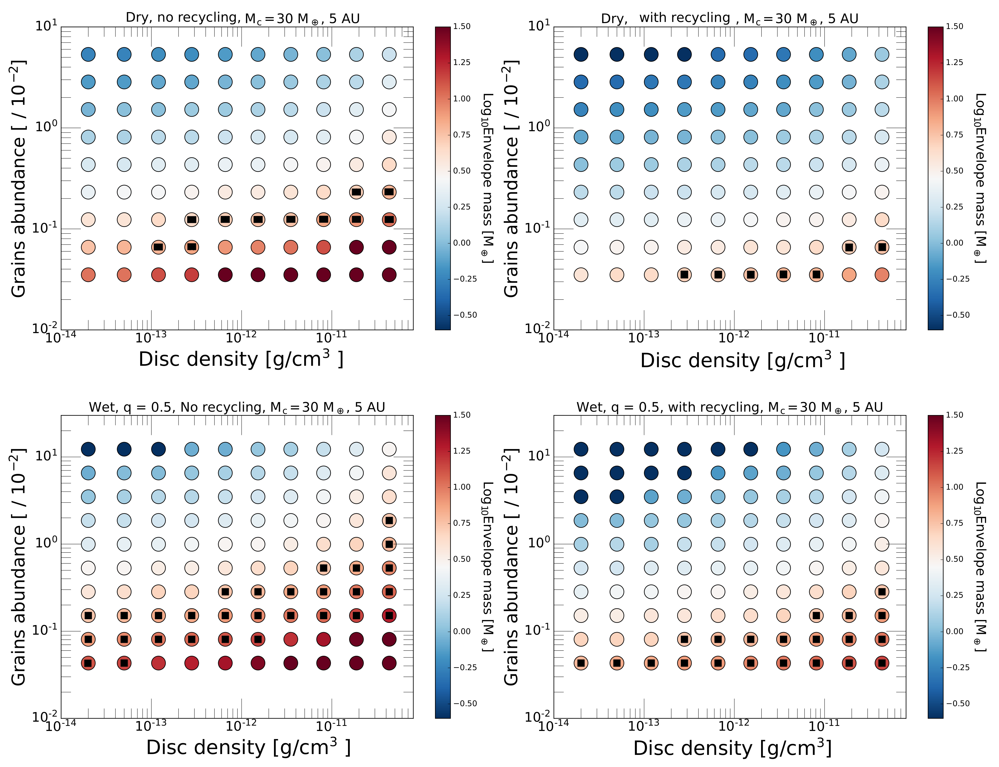
وفي كلتا الحالتين، يتم التحكم في العتامة بشكل مستقل عن محتوى السيليكات في غاز الغلاف الجوي، حتى نتمكن من عزل المساهمات من التأثيرات الفيزيائية المختلفة. إن جعل العتامة ومحتوى السيليكات معلمات مستقلة أمر منطقي أيضًا نظرًا لعدم اليقين في توزيع حجم الجسيمات (غير الذائبة) في الغلاف الجوي. إذا كانت هذه الجزيئات كبيرة بما فيه الكفاية، فيمكن أن يكون الغلاف الجوي في وقت واحد على المسار الأديباتي الرطب ولديه عتامة منخفضة الحبوب. وفي حالة المسار الأديباتي الجاف هكذا نموذج المقارنة هو حالة تحكم مثالية، فنحن لا نحاول أن نجعله متسقًا ذاتيًا تمامًا، وبالتالي نسمح بعتامة حبيبية عالية مع متوسط وزن جزيئي منخفض. هذا التقريب لا ينطبق إلا على الطرف الأعلى من قيم عتامة الحبيبات لدينا حيث تكون وفرتها عالية بما يكفي للتأثير على متوسط الوزن الجزيئي.
بالنسبة لنماذج الأغلفة التي تفترض وجود مسار أديباتي جاف، فإننا نأخذ تكوين الغلاف الجوي بحيث يهيمن عليه الهيدروجين والهيليوم، حتى في حالة عتامة الحبيبات الكبيرة. للتبسيط، نفترض ثابت أديباتي ، العطاء . في الواقع، في ظل ظروف الغلاف الكوكبي الداخلي، يمكن أن يصل إلى 1.2 بسبب تفكك الهيدروجين (Lee, Chiang, & Ormel, 2014; Piso, Youdin, & Murray-Clay, 2015). بالإضافة إلى تقليل تدرج درجة الحرارة الأديباتية، فإن مثل هذه القيم المنخفضة لها عواقب غير مباشرة أيضًا، نظرًا لأن معدل تبريد الأغلفة مع له اعتماد أضعف على الظروف الحدودية من (Lee, Chiang, & Ormel, 2014; Lee & Chiang, 2015). ومع ذلك، نظرًا لأن تركيزنا ينصب على تأثير العناصر الثقيلة، فقد قصرنا نماذجنا على الثابت .
في حالة الأديبات الرطب، نبدأ بافتراض نسبة خلط كتلة السيليكات الثابتة (البارمترية)
| (28) |
حيث هي كثافة السيليكات الكلية، ثم احسب نسبة خلط التشبع . بالنسبة للمنطقة الموجودة في الغلاف حيث ، نفترض التدرج الأديباتي الرطب الذي يلي Leconte et al. (2017)،
| (29) |
حيث طاقة التسامي إرج (Krieger, 1967) ,
| (30) |
مع كثافة بخار السيليكات المشبعة، و الكتل المولية الهيدروجين والسيليكات، و
| (31) |
مع
| (32) |
يتم حساب كثافة بخار السيليكات عند التشبع، وبالتالي ، على النحو التالي. نحل أولاً المعادلات (19)–(21) بافتراض وجود أديبات جاف. يتيح لنا ذلك الحصول على تقدير أولي لدرجة الحرارة وملامح كثافة الغاز H2 . ثم نحسب ضغط التشبع Krieger (1967) كما
| (33) |
تليها كثافة بخار التشبع Si
| (34) |
مع وجود و في متناول اليد، نقوم الآن بحساب توزيع للغلاف. أخيرًا، مع المعروف نقوم بإعادة دمج المعادلات (19)–(21) ولكن بالنسبة لحالة المسار الأديباتي الرطب حيث يتم حل التدرج الأديباتي باستمرار لكل خطوة شعاعية طالما أن المعلمة أكبر من المحسوبة. ويفترض وجود مسار أديباتي جاف في الغلاف الداخلي حيث لا يتم استيفاء ذلك.
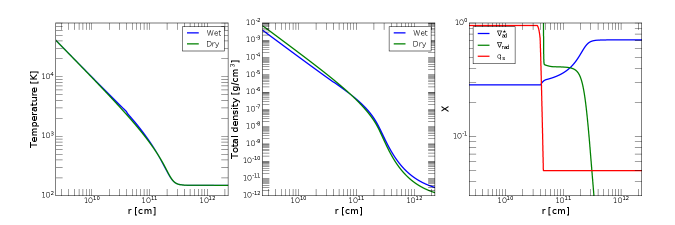
3.3 النتائج واستكشاف مساحة المعلمة
نقوم الآن بالتحقيق في الظروف التي يستطيع فيها النواة تجميع كمية كافية من الغاز بعد الاصطدام العملاق لإنتاج كوكب كتلته شبه زحل. نبحث أيضًا مما إذا كانت النوى التي اصطدمت قد ظلت دون المستوى الحرج (تجنب التراكم الجامح) في قرص الكواكب الأولية قبل حدوث الاصطدام.
يتم عرض نتائج نموذجنا العددي في الشكل 4. تُظهر هذه المخططات كتلة الغلاف حول نواة 30 M⊕ بعد سنة من التراكم. نختار مقياسًا زمنيًا لأن هذا هو المقياس الزمني المميز لاستنفاد الغاز للأقراص الانتقالية. في هذه النماذج، نعتبر نواة 30 M⊕ تقع عند 5 AU حول نجم ذي كتلة شمسية، حيث تكون درجة حرارة القرص 150 كلفن. تُظهر كل لوحة كتلة الغلاف كدالة لكثافة القرص ، وجزء الكتلة من الحبوب (المعلمة التي تحدد عتامة الحبيبات). نعرض أربع لوحات لاختيارات مختلفة من الأديبات الرطب أو الجاف، مع أو بدون إعادة تدوير الأغلفة. نلاحظ، كمرجع، أن الحد الأدنى من كتلة السديم الشمسي له كثافة عند 5 AU تبلغ جم/سم3، مع درجة حرارة قرص سلبية (لا تشمل التسخين اللزج) تبلغ 60 كلفن. نقوم بتطبيع وفرة الحبوب على المحور y إلى القيمة الشمسية الاسمية .
بالنسبة لحالات الأديبات الرطبة، نفترض أن نسبة خلط السيليكات ثابتة تبلغ . وهذا يعني أن الكوكب الأولي هو تراكم غلاف غني بالسيليكات مع كتل متساوية من الهيدروجين والسيليكات. مثل هذا الغاز المخصب بالسيليكات في من المتوقع حدوث منطقة تغذية للكوكب الأولي بعد حدوث اصطدام عملاق، بالقرب من خط الثلج، أو الحافة الداخلية للكوكب مناطق التصوير بالرنين المغناطيسي غير النشطة (Kretke & Lin, 2007; Kretke et al., 2009). لاحظ أن حالة الأديبات الجافة تتوافق مع . لذلك، يمكن اعتبار حالات المسار الأديباتي الرطب والجافة حالات تحد من دور السيليكات في الغلاف.
لكل مجموعة من المعلمات، نقوم أيضًا بإجراء عمليات محاكاة مقابلة ذات نوى ذات كتلة أقل، و 15 م⊕. في الشكل 4، نشير بالمستطيلات السوداء إلى الحالات التي تلبي كلا الحالتين الشروط التالية: 1) لا تخضع لعمليات المحاكاة المقابلة ذات النوى ذات الكتلة المنخفضة ( و ) التراكم الجامح في 106 سنة (مماثلة لعمر القرص النجمي الأولي الذي يحمل نجوم T Tauri)، و2) النهائي كتلة الغلاف عند 105 سنة حول 30 M⊕ النوى هي – (المقابلة لتقارب نسبة كتلة الكوكب إلى النجم ). ولذلك فإن المستطيلات السوداء تمثل الحالات التي تبقى فيها النوى منخفضة الكتلة تحت الحرجة (تجنب التراكم الجامح) خلال المرحلة التطورية الرئيسية لأقراص الكواكب الأولية والمتراكمة فقط ما يكفي من الغلاف خلال مرحلة القرص الانتقالية لإنتاج كوكب فرعي زحل بعد اندماج اثنين نوى متساوية الكتلة (مع لكل منهما).
3.3.1 موديلات ذات مسار أديباتي جاف
تُظهر اللوحات العلوية من الشكل 4 نتائج النماذج ذات الأديبات الجافة. بدون إعادة التدوير (اللوحة العلوية اليسرى من الشكل 4)، هناك "قطري" ضحل في كثافة القرص - مساحة وفرة الحبوب، تمتد من جم/سم إلى جم/سم، حيث تلبي المحاليل كلا الشرطين لتشكيل شبه زحل (مستطيلات سوداء). أسفل هذا القطر، إما أن تصل النواة 30 M⊕ إلى التراكم الجامح في سنة، أو تصل النوى ذات الكتلة المنخفضة إلى التراكم الجامح في سنة. فوق هذا القطر، تؤدي عمليات المحاكاة التي أجريناها إلى كتل غلاف منخفضة تتراوح من عدد قليل إلى عدم وجود أي غلاف تقريبًا على الإطلاق. بمقارنة هذه الحالة بعمليات المحاكاة المقابلة مع اجتراف الإنتروبيا (اللوحة العلوية اليمنى من الشكل 4) ، نجد اتجاهات مماثلة ولكن مع دفع قطري CSS إلى جم / سم 3 و و جم / سم 3 و . ومن ثم فإن اجتراف الإنتروبيا له تأثير عند 5 AU لزيادة أوقات التبريد بعامل ، وذلك بالاتفاق مع نتائجنا السابقة (Ali-Dib, Cumming, & Lin, 2020).
3.3.2 موديلات ذات اديابات مبللة
في اللوحات السفلية من الشكل 4، نعرض كتلة الغلاف الإجمالية، بما في ذلك كل من الهيدروجين والسيليكات. نظرًا لأننا نفرض جزءًا من كتلة السيليكات يبلغ 0.5، فهناك حسب التصميم كميات متساوية من الهيدروجين والسيليكات في الغلاف.
نبدأ بحالة عدم إعادة التدوير التي تؤدي إلى حلول CSS قطريًا أوسع مقارنةً بنموذج الغلاف الجاف المماثل، حيث يتمحور كلا النموذجين حول نفس قطري الكثافة والعتامة. بشكل عام، نجد أن النظر في الحالات الأديباتية الرطبة في الجزء الذي تم استكشافه من مساحة المعلمات يؤدي إلى كتل غلاف مختلفة بشكل معتدل فقط مقارنة بالحالات الجافة.
لفهم الأسباب بشكل أفضل، نرسم في الشكل 5 ملامح درجة الحرارة والكثافة الإجمالية لبعض حالات مسار أديباتي النموذجية الرطبة والجافة التي لها نفس كتلة النواة وكثافة القرص ووفرة الحبوب Zgr. نحن أيضًا نرسم التدرجات الحرارية ونسبة خلط السيليكات للحالة الرطبة. تُظهر هذه المؤامرة اختلافات طفيفة فقط في ملفات تعريف الكثافة الإجمالية بين الحالتين. تكشف المقارنة بين التدرجات الأديباتية الإشعاعية والرطبة في الحالة الرطبة عن ثلاثة أنظمة حرارية: 1) في الغلاف الخارجي، حيث يكون ضغط تشبع الهيدروجين منخفضًا جدًا مما يؤدي إلى تشبع صغير جدًا نسبة خلط بخار السيليكات qs، التدرج الإشعاعي أقل من التدرج الأديباتي الرطب، مما يؤدي إلى جو خارجي إشعاعي ومتساوي الحرارة. 2) في الغلاف الأوسط مع زيادة درجة الحرارة يصبح التدرج الإشعاعي أكبر من التدرج الأديباتي الرطب التدرج، مما يخلق جوًا متوسطًا ضيقًا ورطبًا مع كثافة شديدة الانحدار. 3) في الغلاف الداخلي، مع زيادة درجة الحرارة (وبالتالي qs) بشكل كبير (مما يجعل qs = 0.5)، يتصل الغلاف بأديبات جاف.
لذلك، لكي تتباعد حالة المسار الأديباتي الرطب بشكل كبير عن حالة المسار الأديباتي الجافة، إما يجب أن تكون درجة الحرارة المحيطة أكبر بكثير لزيادة ضغط تشبع السيليكات في الغلاف الخارجي، أو يجب أن تكون أكبر بكثير من القيمة المعتمدة 0.5 لتوسيع منتصف الغلاف الرطب، على الرغم من أنها تؤدي إلى أغلفة غنية بالمعادن للغاية.
من الناحية المادية، تساهم العمليات المختلفة المتعددة في الاختلافات بين حالات المسار الأديباتي الرطب والجافة. أولاً، نظرًا لأن التدرج الأديباتي الأكبر (كما هو الحال في المسار الأديباتي الرطب) يدفع RCB إلى الداخل إلى ضغوط أعلى، ومنذ (Piso & Youdin, 2014)، يكون وقت تراكم التبريد أكبر في هذه الحالة. ومع ذلك، يمكن تعويض هذا الاتجاه بتأثيرات الوزن الجزيئي المتوسط، حيث تقلل معادن الغلاف الأعلى من وقت التبريد عن طريق زيادة درجة الحرارة وبالتالي اللمعان الضروري للحفاظ على التوازن الهيدروستاتيكي (Lee & Chiang, 2015).
اللوحة اليمنى السفلية من الشكل 4 يُظهر الحالة مع كل من المسار الأديباتي الرطب وإعادة تدوير الأغلفة. وهذا له مرة أخرى كتل غلاف أقل من حالة عدم إعادة التدوير المكافئة. لم نجد تقريبًا أي كواكب أولية تصل إلى التراكم الجامح في أي جزء من مساحة المعلمة. فقط الغلافات التي تحتوي على أقل وفرة من الحبوب الغلاف ( 4-6 10-4) يمكنها تجميع كتلة كافية لتكون في نظام CSS.
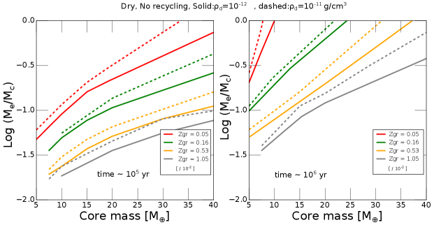
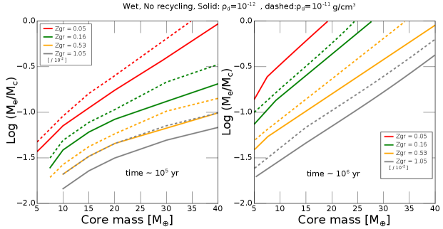
3.3.3 تأثيرات كتلة النواة
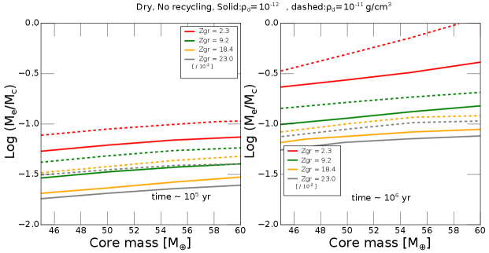
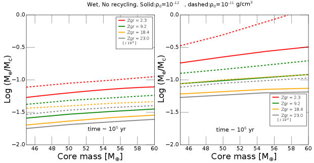
من أجل استكشاف تأثيرات كتل النواة المختلفة، نعرض في الشكل 6 كتلة الغلاف إلى النواة النسبة عند 105 سنة (اللوحة اليسرى) و 106 سنة (اللوحة اليمنى) كدالة للكتلة الأساسية والمعدنية وكثافة الغاز في القرص. الهدف في دراسة المعلمات هذه هو إجراء مزيد من البحث عما إذا كانت النوى يمكن أن تنمو بالفعل إلى 30-40 M⊕ عبر عمليات الدمج العملاقة في أقراص انتقالية منخفضة الكثافة نسبيًا (على مقياس زمني سنة) دون أن يخضع أي من أسلافها "لبنة البناء" لتراكم جامح في القرص النجمي عالي الكثافة نسبيًا (على مقياس زمني سنة). بالنسبة لكل من حالات الغلاف الجاف والرطب، و و جم/سم3 (\colorblack أي تلك الخاصة بسديم الكتلة الأدنى عند 5AU)، نجد أن جميع سلاسل كتلة النواة تصل إلى الهروب خلال 106 سنة للحبوب الوفرة ISM. تتوافق هذه النتيجة مع الشكل 4، وتكشف عن الحد الأدنى التقريبي لقيمة عتامة حبيبات الغلاف اللازمة لتشكيل نوى CSS عبر عمليات الدمج العملاقة.
في الشكل 7، قمنا أيضًا بدراسة تأثيرات كتل النوى ولكن بالنسبة للقيم الموجودة في نطاق 40-60 M⊕ وبالنسبة لعتامة الحبيبات الشمسية الفائقة في الغالب. تكشف هذه الحالات أنه في حين أن نواة =55-60 M⊕ ذات غلاف عتامة شمسي وكثافة قرص تبلغ تهرب خلال 106 سنة، فإن الأغلفة حول – النوى ذات العتامة الشمسية الفائقة يمكنها بالفعل البقاء على قيد الحياة مرحلة القرص الكوكبي الأولي بينما تبقى أقل من كتلة التقاطع.
4 تكوين كواكب أشباه زحل الباردة & عمالقة الجليد
نناقش الآن الآثار المترتبة على نتائجنا في §2 & §3 في سياق قناة تشكيل معقولة للكواكب شبه زحل الباردة (CSS) كما تم تصويرها نوعيًا في الشكل 1. الشرط الأولي الأساسي الذي نفترضه هو الظهور المسبق لأسلاف متعددة من عمالقة الجليد ذات كتل تحت الحرجة بحيث تتجنب تراكم الغاز الجامح خلال المرحلة التطورية الرئيسية لأقراصها الأم.
تكون هذه الكواكب الأولية عرضة للاصطدامات خلال المراحل الانتقالية لأقراصها الأم عندما تنخفض كثافة الغاز بشكل كبير على نطاق زمني يبلغ سنة. لقد أثبتنا بالفعل (في §2) أن مثل هذه الاصطدامات يمكن أن تؤدي إلى طرد الغلاف الأصلي للكواكب بينما تتجمع مراكزها مع فقدان قليل للكتلة من مراكزها المندمجة (الشكل 2). في هذا القسم، ندرس الشرط الضروري لهذه النوى المندمجة لإعادة تكوين غلاف متواضع الكتلة دون الخضوع لتراكم جامح والتحول إلى عمالقة غازية قبل استنفاد أقراص الولادة بشدة خلال الفترة الانتقالية.
4.1 مسارات تكوين الكواكب الباردة التي تقل كتلتها عن زحل
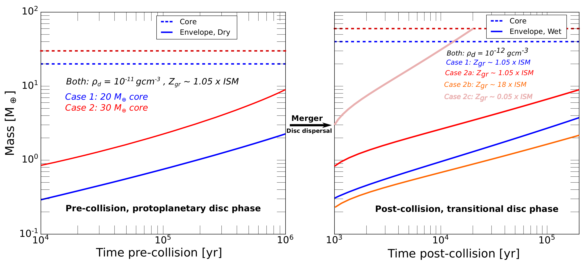
4.1.1 سيناريو النمو المتجانس للنوى السلفية
نحن نفكر أولاً في حالة محدودة لاصطدام عملاق بين نواة 30- ومرتطم بكتلة كافية لمسح غلاف سلفه دون زيادة كتلة النواة المدمجة بشكل ملحوظ.
مع وفرة الحبوب المتواضعة (الشمسية أو شبه الشمسية قليلاً)، توجد مجموعة كبيرة من معلمات النموذج (مع الأغلفة الجافة والرطبة، مع أو بدون اجتراف الإنتروبيا) التي تسمح للأسلاف ذوي النواة المشكلة مسبقًا 30 M⊕ بالحصول على غلاف كتلة مشابه في 1 Myr دون بداية التراكم الجامح (الشكل 4). نظرًا لأن هذه النماذج تم تصميمها للنوى عند 5 AU، فإن مساهمة إعادة التدوير لها تأثيرات محدودة على نتائجها. المعلمات المحددة الرئيسية هي كتلة النواة ووفرة الحبوب في الغلاف. مع الطاقة الشمسية الفائقة ، يمكن أن يتطابق حجم كتلة النواة الحرجة مع نطاق كتلة CSS (الشكل 7) مع تراكم غاز قليل أو معدوم بعد الاصطدام.
ومع ذلك، هناك مشكلتان محتملتان مرتبطتان بسيناريو النمو المتجانس الذي من المفترض أن يكتسب فيه الأسلاف كتلتهم الأساسية من خلال تراكم الحصى وتقتصر مساهمة الاصطدامات العملاقة على إزالة غلاف ما قبل الاصطدام بدون أي تغييرات في كتلة النواة.
أولاً، مع مجموعة من كثافة القرص العالية نسبيًا ووفرة الحبوب المنخفضة نسبيًا (الجزء السفلي الأيمن من كل لوحة في الشكل 4)، تكون بعض النوى قادرة على إعادة التراكم داخل ، غلافات ذات كتلة قابلة للمقارنة بحيث تصبح كتلتها الإجمالية قابلة للمقارنة مع كتلة CSS. ومع ذلك ، فإن هذه الشروط الحدودية تقدم أيضًا معضلة لأننا نتوقع أن تحقق مثل هذه النوى الكبيرة نموًا جامحًا للغلاف خلال المرحلة التطورية الرئيسية لالقرص الأم (على نطاق زمني سنة) ، قبل بداية استنفاد غاز القرص في الوقت المناسب أو تعزيز مستدام كبير في وفرة الحبوب في الأغلفة (على سبيل المثال انظر اللوحة اليمنى من الشكل 6).
ثانيًا، الحد الأدنى من الكتلة المطلوبة للنواة لتجميع غلاف مماثل للكتلة داخل هو (§3.3). من العوائق المحتملة أمام هذا الشرط الأولي المطلوب هو عزل الحصى، والذي يحدث عندما تكتسب الكواكب الأولية كتلة كافية لإزعاج توزيع كثافة سطح الغاز والحث على فتح فجوات ضيقة. من حيث المبدأ، يعمل الحد الأقصى لضغط الغاز المحلي على إيقاف هجرة الحصى المدارية وإخماد إمداداتها إلى النوى المندمجة (Ormel & Klahr, 2010; Ormel, 2017; Lambrechts & Johansen, 2012; Lambrechts, Johansen, & Morbidelli, 2014). كما أن تراكم الحصى عند حواجز الهجرة يزيد من تكرار تصادمها ويعزز معدلات تجزئتها. يتجاوز التدفق المستمر للحبيبات التي يقل حجمها عن المليمتر مصائد الهجرة ويصل إلى مقربة من النوى ويرفع العتامة إلى قيم شمسية فائقة. قد تكون هذه التأثيرات وحدها كافية لقمع الانتقال إلى التراكم الجامح والحفاظ على النوى الضخمة نسبيًا على الرغم من أن اجتراف الإنتروبيا بين الغلاف والقرص يمكن أن يؤدي إلى تقليل معدل التراكم بشكل أكبر (Chen et al., 2020). يوفر الإمداد المستمر بالحصى أيضًا آلية للنوى لاكتساب كتل أكبر من كتلة العزل. ومع ذلك، قد لا تكون هذه التأثيرات كافية لتعزيز تكوين النواة باستخدام .
4.1.2 فرضية الاندماج للنوى السلفية
ومن أجل تجاوز هذه المشكلات، فإننا نأخذ في الاعتبار الآن مساهمة الاصطدامات العملاقة في نمو كتلة النواة. نحن نحدد النوى فوق الحرجة/تحت الحرجة على أنها تلك التي يمكنها أو لا يمكنها الحصول على أغلفة جماعية متساوية (أي ) خلال المرحلة النشطة (داخل 1 Myr) لأقراص الكواكب الأولية (مع جم سم-3). يؤدي اندماج النوى ذات الكتل تحت الحرجة المماثلة () إلى زيادة كتلتها المجمعة بما يصل إلى عامل اثنين (إلى القيم فائقة الأهمية لـ ، الشكل. 1). يمكن لهذه الوحدات البنائية أن تصل إلى كتلتها الأساسية المتواضعة دون الحاجة إلى تجاوز حاجز العزل الحصوي. علاوة على ذلك، فإنها تتجنب أيضًا التراكم الجامح خلال المرحلة التطورية الرئيسية لأقراص الولادة (الشكل 6). على الرغم من أن الكتلة الإجمالية لقلوبها المجمعة تقترب من الحد الأدنى من نطاق كتلة CSS، فإن منتجات الاندماج فائقة الأهمية تبدأ في تراكم الغاز بكفاءة من أقراصها الوليدية. كما أن الحدوث المفضل لأحداث الاندماج هذه في الأقراص الانتقالية المستنفدة بسرعة يمنع أيضًا إمكانية التراكم الجامح ويوفر حدًا طبيعيًا للكتلة المقاربة للكواكب (أقل من ذلك الذي تحدده حالة الفجوة في القرص الغازي، انظر §1). مفصلة المثال موضح في الشكل 8.
سيتم خنق الانتقال بين CSS وعمالقة الغاز إذا لكل من الأسلاف (خلال سنة) ومنتجات الدمج الخاصة بهم (خلال سنة). هذه القيود تحد من الكتلة المقاربة للكواكب الناشئة بحيث لا تزيد عن أربعة أضعاف الكتلة الحرجة التي يجب أن تحصل عليها النوى خلال المرحلة التطورية الرئيسية لأقراص الولادة ( ذ). يعتمد ما إذا كانت الكتلة المقاربة للكواكب ضمن النطاق الكتلي لـ CSS على وفرة الحبوب في الغلاف. مع وفرة الحبوب الشمسية، يكتسب نواة من القرص (مع جم سم-3) بعد سنة (اللوحات اليمنى الشكل 1). 6). إذا أنتج الاصطدام العملاق نواة ، فسيحدث ذلك احصل على قابل للمقارنة من قرص انتقالي مستنفد إلى حد ما جم سم-3) في سنة (اللوحات اليسرى الشكل 7).
وتزداد هذه الكتل الحرجة مع وفرة الحبوب. إذا تم إرجاع جزء من نوى الكواكب المتصادمة إلى أقراص ولادتها أو تم مزجها في الغلاف المحتجز (Liu et al., 2015b, 2019)، فإن النوى المندمجة ستكون محاطة بأغلفة غنية بالعناصر الثقيلة. مع توافر مرتين أو أكثر من الحبوب الشمسية، تتراكم نواة بغلاف مع خلال المرحلة التطورية الرئيسية للقرص (اللوحات اليمنى الشكل 7). لا يزال من الممكن أن يؤدي اصطدامها (خلال المرحلتين الرئيسية والانتقالية) مع نواة أقل ضخامة (على سبيل المثال ) إلى ظهور منتج ثانوي بكتلة إجمالية مقاربة مماثلة لتلك الموجودة في CSS. ولنفس الكتلة الكلية المقاربة فإن النسبة تتناقص مع وفرة الحبوب في الغلاف (الشكل 7). مثل هذه الأولية و لا تعتمد الشروط الحدودية على مرحلة تطور القرص فحسب، بل أيضًا على مع المعلمات النجمية، يشير هذا النطاق من الاحتمالات إلى أن كواكب CSS لديها الإمكانات لتتشكل بنسب غلاف أساسية متنوعة في الأقراص الانتقالية حول مجموعة واسعة من النجوم.
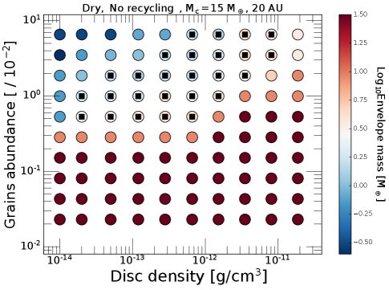
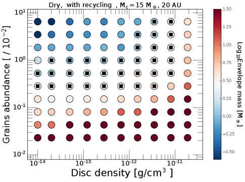
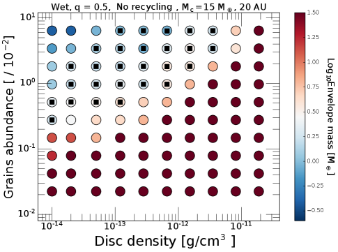
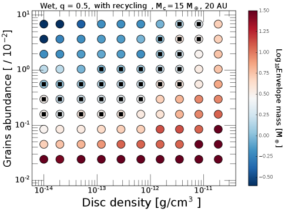
4.2 عمالقة الجليد ذات كتلة نبتون
النماذج التي قدمناها هنا ذات صلة أيضًا بأصل عمالقة الجليد البارد مثل أورانوس ونبتون. كتلة المواد الصلبة في أورانوس ونبتون منخفضة بما يكفي لاستيعابها دون الحاجة إلى اندماج. القضية الأساسية هي ما إذا كانت هذه الكواكب يمكنها الحصول على غلافات بها أجزاء قبل الاستنفاد الشديد لأقراصها الأم.
في الشكل 9، نعرض نتائج عمليات المحاكاة التي قمنا بها ولكن بالنسبة للكتلة الأساسية 15 M⊕ عند 20 AU حيث تكون درجة حرارة القرص وكثافته أقل من تلك عند 5AU. يتم تشغيل عمليات المحاكاة لنفس مجموعة المعلمات المذكورة أعلاه، وتتضمن الحالات Mc = 7.5 M⊕ المقابلة. الاستدلال الرئيسي من هذه المؤامرة هو أن أجزاء كبيرة من مساحة المعلمة تؤدي بالفعل إلى كواكب تشبه أورانوس عند 20 AU، مع وجود أقطار حل واسعة في جميع الحالات 4، بما في ذلك تلك التي تحتوي على مسار أديباتي جاف/رطبة ومع أو بدون اجتراف الإنتروبيا. علاوة على ذلك، تعكس النتائج اتجاهات مماثلة لتلك التي نوقشت أعلاه.
بمقارنة الحالتين الجافتين (أي مع أو بدون اجتراف الإنتروبيا)، نجد أن اجتراف الإنتروبيا يخفض مرة أخرى كتلة الغلاف النهائية ويدفع الخط الحدودي القطري للمحلول إلى كثافات قرصية أعلى ووفرة أقل من الحبوب. كما يؤدي الأديبات الرطب إلى تأثير مماثل، ولكن بدرجة أقل. تتوافق هذه النتائج مع اكتشافنا السابق (Ali-Dib, Cumming, & Lin, 2020) بأن تأثيرات اجتراف الإنتروبيا أكثر أهمية عند 20 من 5 AU.
تتوافق نتائجنا مع نماذج تكوين أورانوس ونبتون الأخرى. Helled & Bodenheimer (2014) على سبيل المثال، أجرى سلسلة من عمليات المحاكاة التي تشمل النمو الأساسي من خلال تراكم الكواكب، وتراكم الغاز لمجموعة واسعة من كثافات سطح السطح الصلب، وكثافات الغاز، وغيرها من المعلمات الحرة. ومع ذلك، فهي لم تتضمن تأثيرات المسار الأديباتي الرطب أو الانتروبيا التأفقية. من الأفضل مقارنة نتائجنا بتشغيلها 20UN2 عند 20 AU حيث = 8 جم/سم3، وZgr تم ضبطها بشكل تعسفي لتكون عامل 50 تحت المعدن الشمسي. (إن التعايش مع مثل هذا النواة الضخم مع وفرة الحبوب المنخفضة يتطلب آلية فعالة للغاية لاستنزاف الحبوب في الغلاف.) بالنسبة لهذه المعلمات، يحصلون على نواة 16.2 M⊕ مع غلاف 20 M⊕ يهرب في 0.54 Myr. بالنسبة لنفس مجموعة المعلمات، في الشكل 9 (الحالة الجافة)، تصل كواكبنا الأولية أيضًا إلى التراكم الجامح على النوى ذات الكتل المماثلة وعلى فترات زمنية مماثلة.
5 تلخيص ومناقشة
لقد بحثنا في أصول أشباه زحل الباردة (CSS)، والكواكب الموجودة في نطاق الكتلة 30-90 M⊕ والتي تم استنتاجها من ملاحظات العدسات الميكروية الأخيرة. هذه الاكتشافات تتناقض مع التوقعات لصحراء كوكبية في هذا النطاق الكتلي استنادًا إلى سيناريو التراكم الأساسي الجامح لتكوين الكوكب. في وفي محاولة للتوفيق بين النظرية والملاحظة، فإننا نستكشف إمكانية حدوث تأثيرات عملاقة كآلية لوقف النمو الجامح المتجانس.
من خلال نمذجة تطور أغلفة الكواكب الأولية بعد الاصطدامات العملاقة، نظهر أن المرتطم في نطاق الكتلة 0.5-1.5 M⊕ الذي يصل إلى سرعة الهروب يمكن أن يجرد غلاف 20-30 M⊕ تمامًا من نواة ذات كتلة متساوية تمامًا.
تحدث هذه العملية في 2 خطوات: 1) تزيل موجة صدمة المرتطم جزءًا صغيرًا من الغلاف، و2) يؤدي تبديد الطاقة الحركية المتبقية إلى زيادة درجة حرارة النواة، مما يؤدي إلى لمعان فوق إدنغتوني وفقدان الكتلة. نؤكد على أن فقدان الكتلة الحرارية هذا مدفوع بالنواة نفسها، على عكس رياح باركر النجمية التي تناولتها Liu et al. (2015b).
من المرجح أن تحدث هذه الاصطدامات خلال مرحلة القرص الانتقالية بسبب التفاعل طويل الأمد بين الكواكب المتعددة وأقراصها الأم (Nagasawa, Lin, & Thommes, 2005; Thommes, Nagasawa, & Lin, 2008; Zheng et al., 2017). بما أن الكواكب الغازية العملاقة الطويلة الأمد والغريبة الأطوار والنجوم المرافقة هي الأكثر احتمالاً لإثارة الاضطرابات، فقد يرتبط تكرار الاصطدامات العملاقة بمعدل حدوثها والذي قد يكون مسؤولاً عن توزيع يوحي شبه مستمر في النهاية العليا (من شبه زحل إلى المشتري الفائق) لدالة الكتلة الكوكبية. هناك حاجة إلى مزيد من التحقيقات تحديد الأهمية الإحصائية لدالة الكتلة المرصودة واحتمالية الاصطدامات العملاقة من نماذج التركيب السكاني ذات الصلة.
نجد أن البيئة منخفضة الكثافة تمنع الغلاف المعاد تراكمه من الوصول إلى التراكم الجامح خلال المقياس الزمني لاستنفاد غاز القرص ( سنة).
يؤدي حد النمو هذا إلى ظهور كواكب CSS.
من عمليات المحاكاة لدينا نستنتج أن:
-
1
من الممكن أن تظهر كواكب فردية ذات كتلة نبتون دون الهروب عند 5 AU بعد 1 Myr، حتى مع عتامة الحبيبات تحت الشمسية. هذه الكواكب الأولية تحت الحرجة التي لها كتلة نبتون حساسة لتأثيرات إزالة الغلاف أثناء تشتت القرص.
-
2
تؤدي الاصطدامات العملاقة إلى مضاعفة كتلة النواة وطرد الغلاف الغازي الأولي عبر مزيج من موجات الصدمة وإضاءة إدنغتون الفائقة.
-
3
على الرغم من تسخين النوى المندمجة بشكل مكثف، إلا أنها تخضع لتبريد أولي سريع بسبب الحمل الحراري الفعال في غلافها المُعاد تراكمه. المقياس الزمني لتساقط غلاف ما بعد الاصطدام بالكامل والتبريد الأساسي هو أقل من حجم القرص الانتقالي.
-
4
على المقياس الزمني لاستنفاد القرص الانتقالي ( سنة)، تكون كتلة الغلاف المُعاد تراكمه أقل من كتلة النوى المندمجة لمجموعة واسعة من العتامات، مما يؤدي إلى CSS.
-
5
إعادة تدوير الأغلفة عبر تدفق القرص يقلل قليلاً من كتلة الأغلفة المعاد تجميعها، لكنه لا يعدل النتائج بشكل كبير.
استنادًا إلى إحصائيات العدسات الميكروية، فإن معدل حدوث CSS يتجاوز معدل حدوث كواكب المشتري الباردة. على الرغم من أنها أقل وضوحًا في مسوحات السرعة الشعاعية، إلا أنه يمكن اكتشافها في الأقراص الانتقالية إذا تشكلت في الغالب من خلال الاصطدامات العملاقة. وبما أن الاصطدامات العملاقة تعيد ضبط ساعة تطورها، فقد يكون لها مسارات تبريد لا تتوافق مع عمر نجومها المضيفة. بالإضافة إلى ذلك، قد تؤدي الاصطدامات العملاقة إلى منتجات ثانوية ذات كتلة إجمالية مماثلة ولكن نصف قطر متنوع وبنية غلاف داخلي داخلي (Liu et al., 2015b).
الشكر والتقدير
نشكر الحكم المجهول على تعليقاته الثاقبة التي ساعدت في تحسين هذه المخطوطة. نشكر Yixian Chen، وEve Lee، وShangfei Liu، وJudit Szulágyi، وDaniel Thorngren، وWeicheng Zang على المناقشات المفيدة. يتم دعم AC من خلال منحة NSERC Discovery Grant وهو عضو في مركز أبحاث الفيزياء الفلكية في كيبيك (CRAQ) ومعهد أبحاث الكواكب الخارجية (iREx). يتم دعم M.A-D من خلال زمالة CAP3 في جامعة نيويورك أبوظبي.
توفر البيانات
ستتم مشاركة البيانات الأساسية لهذه المقالة (ملفات إخراج المحاكاة العددية) بناءً على طلب معقول للمؤلف المقابل.
References
- Ali-Dib, Cumming, & Lin (2020) Ali-Dib M., Cumming A., Lin D. N. C., 2020, MNRAS, 494, 2440. doi:10.1093/mnras/staa914
- Ali-Dib & Petrovich (2020) Ali-Dib M., Petrovich C., 2020, MNRAS, 499, 106. doi:10.1093/mnras/staa2820
- Ali-Dib & Thompson (2020) Ali-Dib M., Thompson C., 2020, ApJ, 900, 96. doi:10.3847/1538-4357/aba521
- Andrews et al. (2018) Andrews S. M., Huang J., Pérez L. M., Isella A., Dullemond C. P., Kurtovic N. T., Guzmán V. V., et al., 2018, ApJL, 869, L41. doi:10.3847/2041-8213/aaf741
- Andrews (2020) Andrews S. M., 2020, ARA&A, 58, 483. doi:10.1146/annurev-astro-031220-010302
- Bell & Lin (1994) Bell K. R., Lin D. N. C., 1994, ApJ, 427, 987
- Batista (2018) Batista V., 2018, haex.book, 120. doi:10.1007/978-3-319-55333-7-120
- Bryden et al. (1999) Bryden G., Chen X., Lin D. N. C., Nelson R. P., Papaloizou J. C. B., 1999, ApJ, 514, 344. doi:10.1086/306917
- Boujibar, Driscoll, & Fei (2020) Boujibar A., Driscoll P., Fei Y., 2020, JGRE, 125, e06124. doi:10.1029/2019JE006124
- Chambers, Wetherill, & Boss (1996) Chambers J. E., Wetherill G. W., Boss A. P., 1996, Icarus, 119, 261.
- Chambers & Wetherill (1998) Chambers J. E., Wetherill G. W., 1998, Icarus, 136, 304.
- Chen et al. (2020) Chen Y.-X., Li Y.-P., Li H., Lin D. N. C., 2020, ApJ, 896, 135. doi:10.3847/1538-4357/ab9604
- Chen et al. (2021) Chen Y.-X., Wang Z., Li Y.-P., Baruteau C., Lin D. N. C., 2021, arXiv, arXiv:2109.03333
- Deeg & Alonso (2018) Deeg H. J., Alonso R., 2018, haex.book, 117. doi:10.1007/978-3-319-55333-7-117
- Ferguson et al. (2005) Ferguson J. W., Alexander D. R., Allard F., Barman T., Bodnarik J. G., Hauschildt P. H., Heffner-Wong A., et al., 2005, ApJ, 623, 585. doi:10.1086/428642
- Freedman et al. (2014) Freedman R. S., Lustig-Yaeger J., Fortney J. J., Lupu R. E., Marley M. S., Lodders K., 2014, ApJS, 214, 25
- Gaudi, Christiansen, & Meyer (2020) Gaudi B. S., Christiansen J. L., Meyer M. R., 2020, arXiv, arXiv:2011.04703
- Genda & Abe (2003) Genda H., Abe Y., 2003, Icar, 164, 149. doi:10.1016/S0019-1035(03)00101-5
- Ginzburg & Chiang (2020) Ginzburg S., Chiang E., 2020, MNRAS, 498, 680. doi:10.1093/mnras/staa2500
- Goldreich et al. (2004) Goldreich P., Lithwick Y., Sari R., 2004, ARA&A, 42, 549
- Goldreich & Tremaine (1980) Goldreich P., Tremaine S., 1980, ApJ, 241, 425. doi:10.1086/158356
- Guerrero et al. (2021) Guerrero N. M., Seager S., Huang C. X., Vanderburg A., Garcia Soto A., Mireles I., Hesse K., et al., 2021, arXiv, arXiv:2103.12538
- Huang et al. (2018) Huang J., Andrews S. M., Dullemond C. P., Isella A., Pérez L. M., Guzmán V. V., Öberg K. I., et al., 2018, ApJL, 869, L42. doi:10.3847/2041-8213/aaf740
- Hwang et al. (2021) Hwang K.-H., Zang W., Gould A., Udalski A., Bond I. A., Yang H., Mao S., et al., 2021, arXiv, arXiv:2106.06686
- Helled & Bodenheimer (2014) Helled R., Bodenheimer P., 2014, ApJ, 789, 69. doi:10.1088/0004-637X/789/1/69
- Hillenbrand (2005) Hillenbrand L. A., 2005, arXiv, astro-ph/0511083
- Hwang et al. (2021) Hwang K.-H., Zang W., Gould A., Udalski A., Bond I. A., Yang H., Mao S., et al., 2021, arXiv, arXiv:2106.06686
- Ida & Lin (2004) Ida S., Lin D. N. C., 2004, ApJ, 604, 388. doi:10.1086/381724
- Ida & Lin (2010) Ida S., Lin D. N. C., 2010, ApJ, 719, 810. doi:10.1088/0004-637X/719/1/810
- Ida, Lin, & Nagasawa (2013) Ida S., Lin D. N. C., Nagasawa M., 2013, ApJ, 775, 42. doi:10.1088/0004-637X/775/1/42
- Inamdar & Schlichting (2015) Inamdar N. K., Schlichting H. E., 2015, MNRAS, 448, 1751. doi:10.1093/mnras/stv030
- Jung et al. (2019) Jung Y. K., Gould A., Zang W., Hwang K.-H., Ryu Y.-H., Han C., Yee J. C., et al., 2019, AJ, 157, 72. doi:10.3847/1538-3881/aaf87f
- Jurć & Tremaine (2008) Jurić M., Tremaine, 2008, ApJ, 686, 603. doi:10.1086/590047
- Kokubo, Kominami, & Ida (2006) Kokubo E., Kominami J., Ida S., 2006, ApJ, 642, 1131. doi:10.1086/501448
- Kokubo & Ida (1998) Kokubo E., Ida S., 1998, Icarus, 131, 171
- Kretke & Lin (2007) Kretke K. A., Lin D. N. C., 2007, ApJL, 664, L55. doi:10.1086/520718
- Kretke et al. (2009) Kretke K. A., Lin D. N. C., Garaud P., Turner N. J., 2009, ApJ, 690, 407. doi:10.1088/0004-637X/690/1/407
- Krieger (1967) Krieger F. J., 1967, Rand Corp., Memo. RM-5337-PR
- Kunimoto & Matthews (2020) Kunimoto M., Matthews, J., 2020, AJ, 159, 248. doi:10.3847/1538-3881/ab88b0
- Lambrechts & Johansen (2012) Lambrechts M., Johansen A., 2012, A&A, 544, A32. doi:10.1051/0004-6361/201219127
- Lambrechts, Johansen, & Morbidelli (2014) Lambrechts M., Johansen A., Morbidelli A., 2014, A&A, 572, A35. doi:10.1051/0004-6361/201423814
- Leconte et al. (2017) Leconte J., Selsis F., Hersant F., Guillot T., 2017, A&A, 598, A98. doi:10.1051/0004-6361/201629140
- Lee, Chiang, & Ormel (2014) Lee E. J., Chiang E., Ormel C. W., 2014, ApJ, 797, 95
- Lee & Chiang (2015) Lee, E. J., & Chiang, E. 2015, ApJ, 811, 41
- Lodato et al. (2019) Lodato G., Dipierro G., Ragusa E., Long F., Herczeg G. J., Pascucci I., Pinilla P., et al., 2019, MNRAS, 486, 453. doi:10.1093/mnras/stz913
- Long et al. (2018) Long F., Pinilla P., Herczeg G. J., Harsono D., Dipierro G., Pascucci I., Hendler N., et al., 2018, ApJ, 869, 17. doi:10.3847/1538-4357/aae8e1
- Long et al. (2019) Long F., Herczeg G. J., Harsono D., Pinilla P., Tazzari M., Manara C. F., Pascucci I., et al., 2019, ApJ, 882, 49. doi:10.3847/1538-4357/ab2d2d
- Li et al. (2010) Li S. L., Agnor C. B. Lin D. N. C., 2010, ApJ, 720, 1161
- Li et al. (2021) Li Y.-P., Chen Y.-X., Lin D. N. C., Zhang X., 2021, ApJ, 906, 52. doi:10.3847/1538-4357/abc883
- Lin & Papaloizou (1980) Lin D. N. C., Papaloizou J., 1980, MNRAS, 191, 37. doi:10.1093/mnras/191.1.37
- Lin & Papaloizou (1986) Lin D. N. C., Papaloizou J., 1986, ApJ, 307, 395. doi:10.1086/164426
- Lin & Papaloizou (1993) Lin D. N. C., Papaloizou J. C. B., 1993, prpl.conf, 749
- Lin & Ida (1997) Lin D. N. C., Ida S., 1997, ApJ, 477, 781. doi:10.1086/303738
- Liu et al. (2015a) Liu B. B., Zhang X., Lin D. N. C., Aarseth S., 2015a, ApJ, 798, 621. doi:10.1088/0004-637X/798/1/62
- Liu et al. (2015b) Liu S.-F., Hori Y., Lin D. N. C., Asphaug E., 2015b, ApJ, 812, 164. doi:10.1088/0004-637X/812/2/164
- Liu et al. (2015c) Liu S.-F., Agnor C. B., Lin D. N. C., Li S.-L., 2015c, MNRAS, 446, 1685. doi:10.1093/mnras/stu2205
- Liu et al. (2019) Liu S.-F., Hori Y., Müller S., Zheng X., Helled R., Lin D., Isella A., 2019, Natur, 572, 355. doi:10.1038/s41586-019-1470-2
- Morbidelli et al. (2014) Morbidelli A., Szulágyi J., Crida A., Lega E., Bitsch B., Tanigawa T., Kanagawa K., 2014, Icar, 232, 266. doi:10.1016/j.icarus.2014.01.010
- Mordasini, Alibert, & Benz (2009) Mordasini C., Alibert Y., Benz W., 2009, A&A, 501, 1139. doi:10.1051/0004-6361/200810301
- Nagasawa, Lin, & Thommes (2005) Nagasawa M., Lin D. N. C., Thommes E., 2005, ApJ, 635, 578. doi:10.1086/497386
- Nayakshin, Dipierro, & Szulágyi (2019) Nayakshin S., Dipierro G., Szulágyi J., 2019, MNRAS, 488, L12. doi:10.1093/mnrasl/slz087
- Ogihara et al. (2021) Ogihara M., Hori Y., Kunitomo M., Kurosaki K., 2021, A&A, 648, L1. doi:10.1051/0004-6361/202140464
- Ormel (2017) Ormel C. W., 2017, ASSL, 197. doi:10.1007/978-3-319-60609-5_7
- Ormel & Klahr (2010) Ormel C. W., Klahr H. H., 2010, A&A, 520, A43. doi:10.1051/0004-6361/201014903
- Ormel, Shi, & Kuiper (2015) Ormel C. W., Shi J.-M., Kuiper R., 2015, MNRAS, 447, 3512. doi:10.1093/mnras/stu2704
- Petrovich, Wu, & Ali-Dib (2019) Petrovich C., Wu Y., Ali-Dib M., 2019, AJ, 157, 5. doi:10.3847/1538-3881/aaeed9
- Piso & Youdin (2014) Piso A.-M. A., Youdin A. N., 2014, ApJ, 786, 21. doi:10.1088/0004-637X/786/1/21
- Piso, Youdin, & Murray-Clay (2015) Piso A.-M. A., Youdin A. N., Murray-Clay R. A., 2015, ApJ, 800, 82. doi:10.1088/0004-637X/800/2/82
- Pollack et al. (1996) Pollack J. B., Hubickyj O., Bodenheimer P., Lissauer J. J., Podolak M., Greenzweig Y., 1996, Icarus, 124, 62. doi:10.1006/icar.1996.0190
- Rasio & Ford (1996) Rasio F., Ford E., 1996, Science, 274, 954. doi:10.1126 /science.274.5289.954
- Ribas, Bouy, & Merín (2015) Ribas Á., Bouy H., Merín B., 2015, A&A, 576, A52. doi:10.1051/0004-6361/201424846
- Safranov (1969) Safranov, V., 1969, Evolution of the Protoplanetary Cloud and Formation of the Earth and Planets (Moscow: Nauka).
- Schlichting, Sari, & Yalinewich (2015) Schlichting H. E., Sari R., Yalinewich A., 2015, Icar, 247, 81. doi:10.1016/j.icarus.2014.09.053
- Suzuki et al. (2016) Suzuki D., Bennett D. P., Sumi T., Bond I. A., Rogers L. A., Abe F., Asakura Y., et al., 2016, ApJ, 833, 145. doi:10.3847/1538-4357/833/2/145
- Suzuki et al. (2018) Suzuki D., Bennett D. P., Ida S., Mordasini C., Bhattacharya A., Bond I. A., Donachie M., et al., 2018, ApJL, 869, L34. doi:10.3847/2041-8213/aaf577
- Terry et al. (2021) Terry S. K., Bhattacharya A., Bennett D. P., Beaulieu J.-P., Koshimoto N., Blackman J. W., Bond I. A., et al., 2021, AJ, 161, 54. doi:10.3847/1538-3881/abcc60
- Thommes, Nagasawa, & Lin (2008) Thommes E., Nagasawa M., Lin D. N. C., 2008, ApJ, 676, 728. doi:10.1086/526408
- Weidenschilling & Marzari (1996) Weidenschilling S., Marzari F., 1996, Nature, 384, 619. doi:10.1038/384619a0
- Zang et al. (2020) Zang W., Shvartzvald Y., Udalski A., Yee J. C., Lee C.-U., Sumi T., Zhang X., et al., 2020, arXiv, arXiv:2010.08732
- Zang et al. (2021) Zang W., Hwang K.-H., Udalski A., Wang T., Zhu W., Sumi T., Gould A., et al., 2021, arXiv, arXiv:2103.11880
- Zheng et al. (2017) Zheng X. Lin D. N. C., Kouwenhoven M. B. N., Mao S., Zhang X., 2017, ApJ, 849, 98. doi:10.3847/1538-4357/aa8ef3
- Zhou, Lin, & Sun (2007) Zhou J.-L., Lin D. N. C., Sun Y.-S., 2007, ApJ, 666, 423. doi:10.1086/519918
- Zhou & Lin (2007) Zhou J.-L., Lin D. N. C., 2007, ApJ, 666, 447. doi:10.1086/520043
Appendix A مرحلة إدينغتون الهامشية
بعد اصطدام عملاق، أظهرنا في §2.3 أن لمعان النواة هو ، ونتوقع أن تقوم رياح فوق إدنغتونية بتجريد النواة من غلافها حراريًا بالكامل، وربما نحت فجوة قصيرة العمر داخل نصف قطر هيل. بمجرد أن تبرد النواة بدرجة كافية لإغلاق هذه الفجوة، بحيث ، قد يظل ضغط الإشعاع ذا صلة، لأنه سيؤدي إلى تغيير في نصف قطر هيل الفعال. ومن ثم نقوم بحساب نصف قطر هيل المعدل لهذا بدءًا من
| (35) |
والتي يمكن كتابتها ك
| (36) |
بالنسبة إلى ، أو المحور شبه الرئيسي الصغير (r في الفصل الأول)، يؤدي ذلك إلى تقليل نصف قطر هيل الكلاسيكي. بالنسبة للمحور الكبير ، أو شبه الرئيسي الكبير، يتم تقليل هذا إلى
| (37) |
حيث هي درجة الحرارة الأساسية و هو ثابت الإشعاع.
في الشكل 10 نعرض تطور نصف قطر هيل لنفس المعلمات الاسمية (30 M⊕ الأساسية) المستخدمة في الأقسام 2.2 و2.3 والشكل 2، ولكن بالنسبة إلى T. افترضنا M، وهي كتلة الغلاف التي تم العثور عليها عند ظهور منطقة إشعاعية خارجية للتو. وهذا يتوافق مع كتل الغلاف الأديباتية التي وجدتها Inamdar & Schlichting (2015) في نفس النظام.
يؤدي ضغط الإشعاع إلى تقليص نصف قطر هيل بشكل كبير إلى ما بعد 1 AU، مما يزيد من وقت التبريد بمقدار 2 أوامر من الحجم عند 5 AU. لا يؤثر هذا عادةً على إعادة تراكم الغلاف بشكل كبير حيث أن النظام سوف يبرد خارج هذه المرحلة بسرعة كبيرة في القرص الخارجي حيث يكون التأثير ذا صلة.
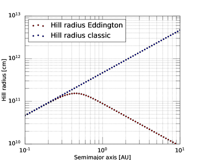
Appendix B تطور درجة حرارة قاعدة الغلاف
بمجرد أن تبرد النواة بدرجة كافية للسماح بوجود منطقة إشعاعية، يمكن أن يبدأ الغلاف في التبريد والانكماش. في حساباتنا في §3، نحن لا ندرج اللمعان من النواة، ولكن بدلاً من ذلك نفترض أن تبريد الغلاف يهيمن عليه لمعان الانكماش. ومع ذلك، في الحالة التي ندرسها، وهي التطور الذي أعقب اصطدامًا عملاقًا، يكون النواة ساخنًا ويمتلك طاقة حرارية كبيرة. عندما يبرد، يمكن أن يكون بمثابة مصدر حرارة داخلي للغلاف. نبحث من هذا السؤال هنا وكذلك التطور الزمني لدرجة الحرارة عند قاعدة الغلاف.
ومع تراكم الغلاف، يمكن أن تزيد درجة الحرارة عند قاعدته أو تنخفض. يمكننا أن نرى ذلك من خلال تقدير تحليلي بسيط. خذ بعين الاعتبار نواة ضخمة (Mc، Rc) ذات غلاف منخفض الكتلة (كتلة ) بحيث ، مما يسمح لنا بإهمال الجاذبية الذاتية للغلاف. في هذه الحالة، من التوازن الهيدروستاتيكي، يكون الضغط عند قاعدة الغلاف تقريبًا
| (38) |
معدل تغير الضغط هو
| (39) |
حيث هو معدل التراكم والعطاء
| (40) |
أي: مع نمو الغلاف، يزداد الضغط عند القاعدة مع زيادة كتلتها.
الآن، بافتراض أن الغلاف يبرد بشكل ثابت، يمكننا أيضًا الكتابة
| (41) |
حيث هو إنتروبيا الغلاف، هو متوسط درجة حرارة الكتلة، لمعان التبريد، و هو اللمعان الذي يدخل الغلاف من النواة. إذا كتبنا الإنتروبيا كـ
| (42) |
ثم يعطي هذا
| (43) |
وبالتالي باستخدام المعادلة (40)،
| (44) |
نرى أنه في حين أن الضغط عند قاعدة الغلاف يزداد دائمًا مع زيادة الكتلة في الغلاف، فإن درجة الحرارة عند القاعدة يمكن أن تزيد أو تنخفض، اعتمادًا على الحجم النسبي للحدين على الجانب الأيمن من المعادلة (44). في حالة التوازن، نتوقع ، حيث هو نصف قطر مميز في الغلاف، وبالتالي فإن معدل التغير في درجة الحرارة يعتمد على كيفية مقارنة اللمعان في الغلاف مع اللمعان المتزايد . مع إهمال أي مساهمة في اللمعان من النواة، نتوقع أن يكون الحدان في المعادلة (44) قابلين للمقارنة، بحيث يمكن أن يكون التغير في درجة الحرارة موجبًا أو سالبًا.
في الشكل 11، باستخدام النموذج العددي الموضح في المخطوطة، للحصول على نواة 30 M⊕ و بافتراض وفرة حبوب ISM، نعرض لمعان الغلاف ودرجة الحرارة الأساسية والضغط عند 0.1 و1 و5 AU لنموذج القرص المبرد إشعاعيًا الموصوف في Ali-Dib, Cumming, & Lin (2020) (ترد قيم درجة حرارة القرص وكثافته في التسمية التوضيحية للشكل 11). نجد أنه في الحالات الثلاث، تنخفض درجة الحرارة الأساسية قليلًا كدالة للزمن قبل أن تبدأ في الارتفاع. ومن ناحية أخرى، فإن ضغط القاعدة يزداد دائمًا بشكل رتيب، كما تمت مناقشته في نموذجنا التحليلي أعلاه.
في جميع الحالات، إذا كانت درجة الحرارة الأساسية أعلى من درجة حرارة النواة، فإن الغلاف سيفقد الطاقة إلى النواة، مما يؤدي إلى تسريع عملية تبريده قليلاً. إذا كان النواة أكثر سخونة، فإن هذا يضيف طاقة إلى الغلاف، مما يؤدي إلى إبطاء تبريده. نجد عدديًا أن كلا التأثيرين لا يكاد يذكر على فترات زمنية أكبر من – سنة. يتوافق هذا مع تقدير بسيط يفترض أن النواة متساوية الحرارة ولها سعة حرارية محددة ثابتة وكثافة (كما هو مفترض في §2.1). إذا تم تبريد النواة وفقا ل
| (45) |
نجد ، حيث هي درجة الحرارة الأساسية الأولية. بافتراض يعطي
| (46) |
مع اللمعان المقابل أو
| (47) |
كلا و هما في وقت معين. بالمقارنة مع الشكل 11، نرى أن اللمعان الأساسي وضياء الغلاف قابلان للمقارنة عند . ويفترض هذا أن الحرارة يتم نقلها بكفاءة داخل النواة وبالتالي تظل متساوية الحرارة أثناء تبريدها. سيكون من المثير للاهتمام التحقيق بمزيد من التفصيل في نقل الطاقة داخل النواة وعبر واجهة الغلاف الأساسي لحالات زيادة درجة الحرارة أو النقصان عند حدود الغلاف الأساسي.
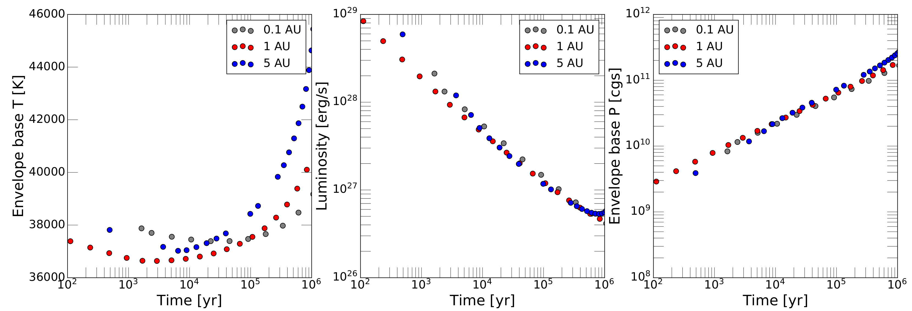
Appendix C مبرهنة فيريال للأغلفة
في هذا الملحق، نستخدم نظرية فيريال لمناقشة طاقة الربط المتوقعة والحجم النسبي لطاقات الجاذبية والطاقات الداخلية للغلاف.
نذكر أولاً مبرهنة فيريال للنجم، ثم نطبقها على الغلاف الكوكبي. نبدأ بالتوازن الهيدروستاتيكي ، حيث . الضرب بـ والتكامل على الحجم يعطي
| (48) |
الجانب الأيمن هو طاقة الجاذبية
| (49) |
يمكن دمج الجانب الأيسر بأجزاء مثل
| (50) |
في حالة النجم، يختفي المصطلح السطحي لأن التكامل ينتقل من إلى حيث . لقد بقي لنا
| (51) |
للحصول على معادلة ثابتة الحرارة للحالة ذات مؤشر أديباتي ، ، حيث هي كثافة الطاقة الداخلية (على سبيل المثال يعطي ؛ يعطي ). لذلك
| (52) |
حيث نكتب إجمالي الطاقة الداخلية بالرمز .
المعادلة (52) هي مبرهنة فيريال المعتادة للنجوم (إهمال الدوران والاعتماد على الزمن). بالنسبة إلى ، لدينا ، وهي النتيجة المألوفة وهي أن الطاقة الداخلية هي نصف طاقة الجاذبية. الطاقة الإجمالية هي
لـ ، كما هو متوقع. بالنسبة لـ ، يصبح حجم الطاقة الداخلية وطاقة الجاذبية متساويين، و . النجمة التي تحتوي على ستكون غير منضمة.
الآن فكر في غلاف أديباتي على نواة بكتلة ونصف قطر وحجم . الحجة هي نفسها كما كانت من قبل، لكننا بحاجة الآن إلى الاحتفاظ بالحد السطحي في المعادلة (50). هذا يعطي
| (53) |
حيث يتم تقييم التكاملات في و على حجم الغلاف، و هو الضغط عند قاعدة الغلاف (عند ).
يمكن كتابة المعادلة (53) على النحو التالي:
| (54) |
مما يسمح لنا بتقييم نسبة طاقة الجاذبية الداخلية إلى الطاقة التحليلية، ومقارنة تحليلنا أعلاه مع النسبة المحسوبة عدديًا. بالنسبة إلى نواة 30 M⊕ ذات غلاف متساوي الكتلة عند 5 AU، فإن نسبة المحاكاة العددية U/ من الجدول 1 هي -0.70 و-0.95 على التوالي لـ = 1.4 و1.25. بإدخال ( ) المحسوبة تحليلياً في الجدول 1 وباستخدام من المحاكاة العددية نحصل على نسب U/ لـ -0.78 و -1.09 على التوالي لـ = 1.4 و 1.25. وبالتالي فإن تحليلنا التحليلي يتوافق مع نتائج عمليات المحاكاة العددية.
علاوة على ذلك، نرى أن الطاقة الإجمالية تحتوي الآن على حد إضافي،
| (55) |
هذا يعني أنه يمكن أن يكون لدينا أغلفة بـ لأنه على الرغم من أن الحد الأول موجب، إلا أن هناك حدًا سلبيًا إضافيًا يأتي من النواة ويمكنه إبقاء الغلاف مقيدًا. الحد الأدنى لقيمة للغلاف المقيد هو
| (56) |
وفي حد كتلة الغلاف الصغير والغلاف الرقيق يمكننا تقديره
| (57) |
و . وهذا يعطي ، بحيث يكون في هذا الحد، يتوافق مع جو متساوي الحرارة.